Welcome — read this first
The 1000 FiX ERP is one connected system for the whole company: every service order, part, invoice, technician hour and customer conversation lives in one place. This guide shows you how to work in it — and why each part exists.
What the ERP covers
67 modules · 12 areas
823 screens, 346 built-in reports, 266 data-entry forms and 5,100 registered functions — from first phone call to VAT return, across all branches.
12 portals
Customers, technicians, corporates, vendors and partners each get their own door into the same system (see Part 5).
English + বাংলা
Every screen switches language instantly from the top bar. The customer chatbot speaks Bangla too.
ISO 9001:2015 aligned
Processes, quality gates and audit trails in the system are the same ones our certificate is audited against.
How to use this guide
- New employee? Read Parts 1–2 (getting started + core skills). That is enough to be useful on day one.
- Working in a specific department? Jump to your area in Part 4 — each module page shows what it does, the steps you perform, the business logic behind them, and tables of its screens, reports and forms.
- Need a word? The glossary in Part 8 explains every term used at 1000 FiX — from AMC to VAT to FTTR.
The system itself is the best teacher: the #/coverage screen shows every module and screen, and Tell-ME search (press Alt+Q) finds any screen, report or record by name — in English or Bangla.
One system behind every door
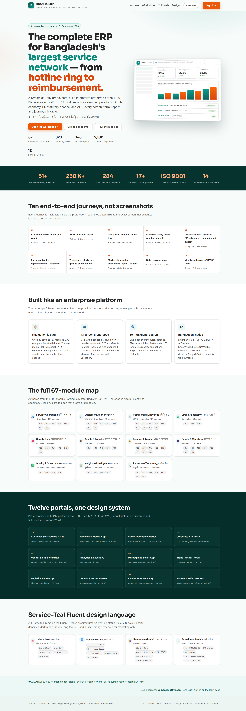
Part 1 · Getting started
1.1 Log in
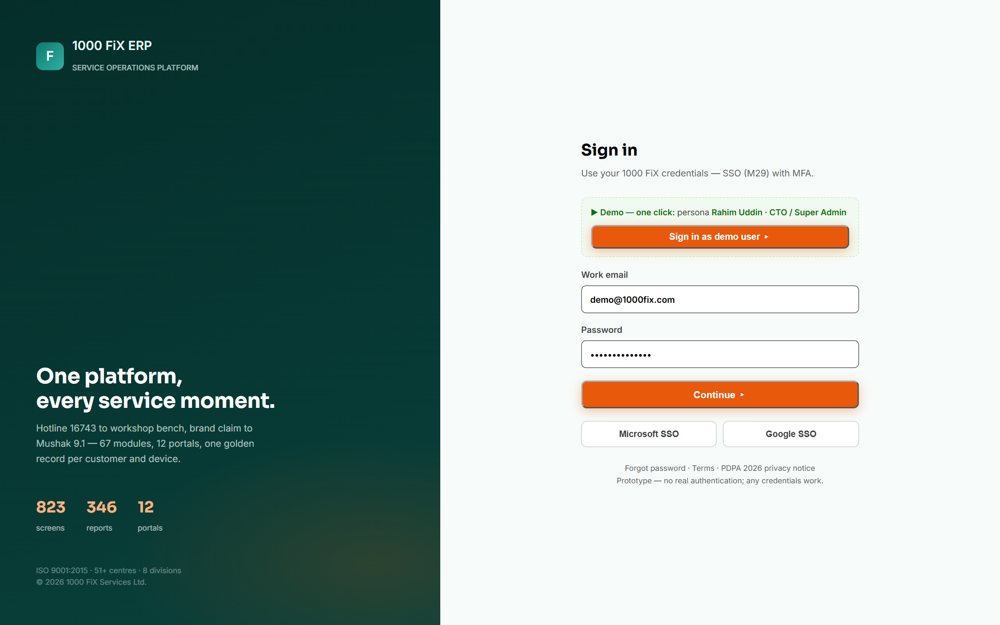
- Open the ERP address in any modern browser — desktop or phone, the shell adapts.
- Enter your work email and password. First-time users receive credentials from IT (module M66).
- Type the 6-digit code from your authenticator app — the box auto-advances digit by digit.
- You land on your Role Centre — a home page assembled for your job.
1.2 The screen you'll live in
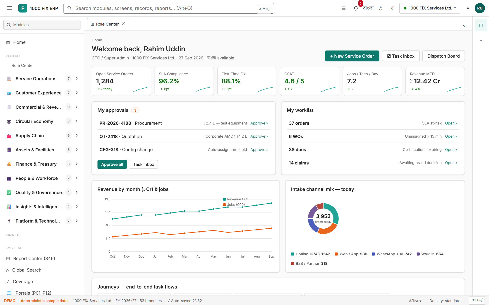
| Element | What it does |
|---|---|
| Tell-ME search (top centre) | Searches every screen, module, report and record. Press Alt+Q, type 2–3 letters, pick with ↓/↑, open with Enter. |
| Left navigation | Every module grouped into 12 areas. Expand an area in the rail, or click it once to open its mega menu. |
| Tab strip (under the top bar) | Like browser tabs: every screen you open gets a tab (up to 12). Your session restores on next login. |
| Breadcrumbs (status bar) | Always shows where you are; every step is a link back. |
| Top-right buttons | Language (EN/বাংলা), density, dark mode, notifications, company, Fix AI copilot, your profile. |
| Status bar (bottom) | Environment, session, keyboard hints. |
1.3 The mega menu — one click to any screen
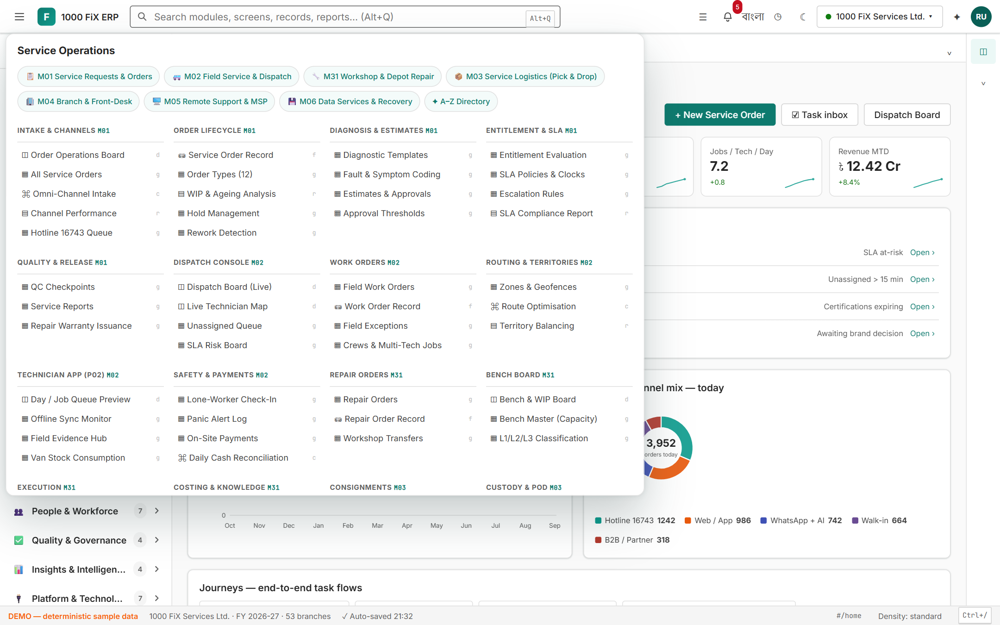
- Click an area (e.g. Service Operations) in the left navigation.
- The mega menu lists every module's screen groups — click any screen to open it.
- The menu closes automatically when you navigate; click outside to dismiss it without choosing.
1.4 Tell-ME — finding anything in seconds
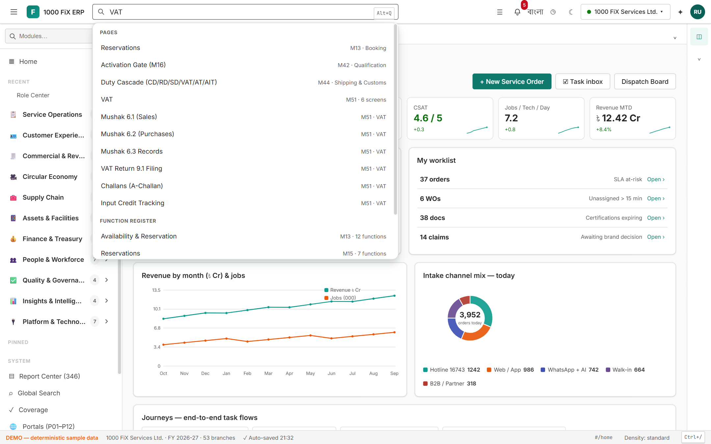
dispatch, press ↓ twice, then Enter. You are on the dispatch board. This one habit replaces most navigation.1.5 Make the system yours
- Language — the বাংলা/EN button switches the shell instantly; modules and screens carry Bangla names too.
- Density — compact / standard / relaxed changes table row height (cashiers love compact).
- Dark mode — remembered per device; charts are tuned for both themes.
- Phone use — on a small screen the left rail collapses; the ☰ button opens it as an overlay that closes when you navigate.
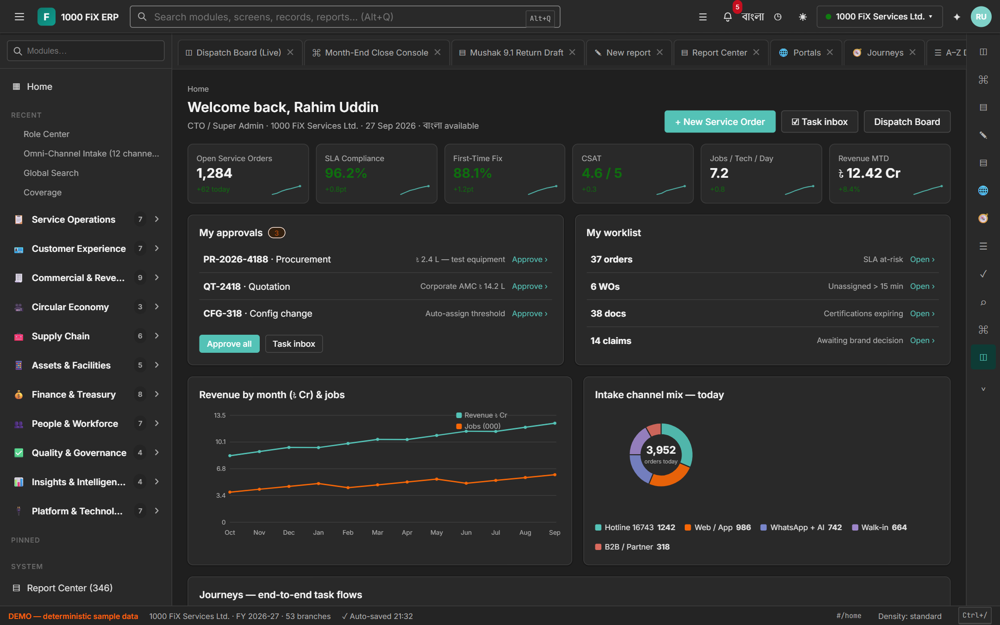
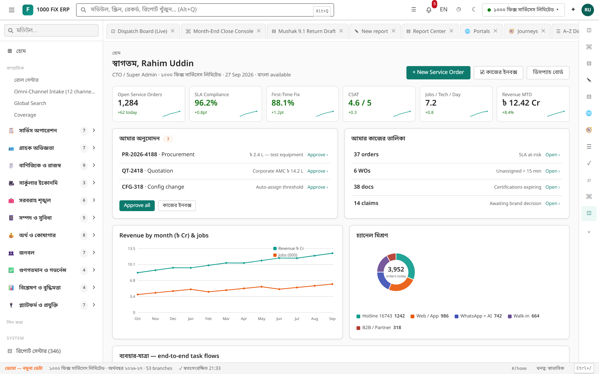
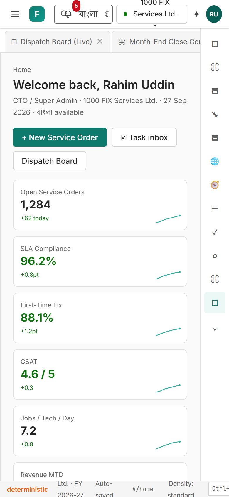
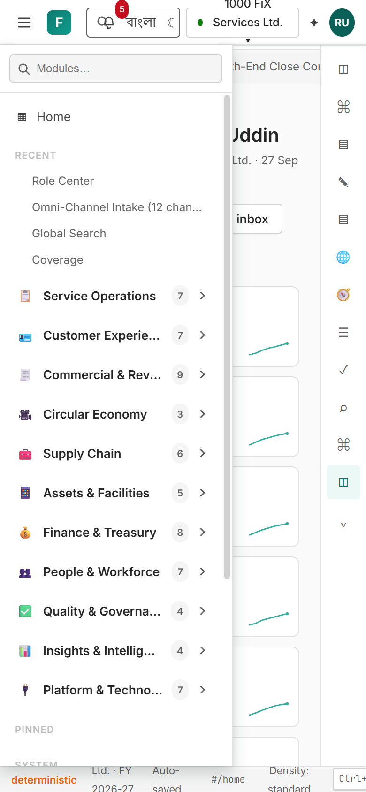
1.6 Keyboard shortcuts worth memorising
| Shortcut | Action |
|---|---|
| Alt+Q | Focus Tell-ME search |
| Ctrl+K | Command palette — jump to any screen |
| Alt+C | Fix AI copilot |
| Ctrl+Shift+O | Switch company / entity |
The full list lives on the #/shortcuts screen in the app.
Part 2 · Core skills (used in every module)
2.1 Working with lists (grids)
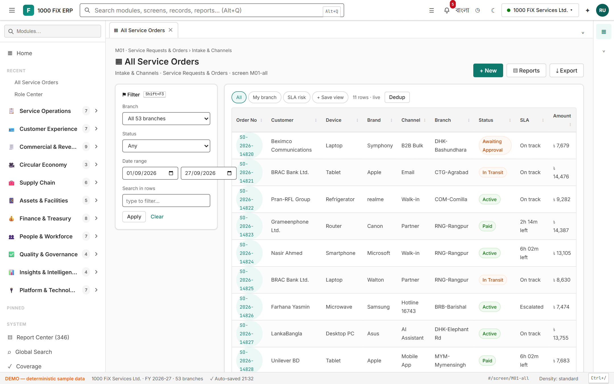
- Filter pane (left): pick values — filters combine and show as chips above the grid.
- Saved views: use your team's shared views (e.g. “SLA at risk”) or save your own — they persist per user.
- Column menus (⋮ on each header): sort, hide and show columns.
- Open anything: the first column of every grid is a link to the full record.
- Export any grid to XLSX / CSV — no screenshot-reporting needed.
2.2 Working with a record — the process bar
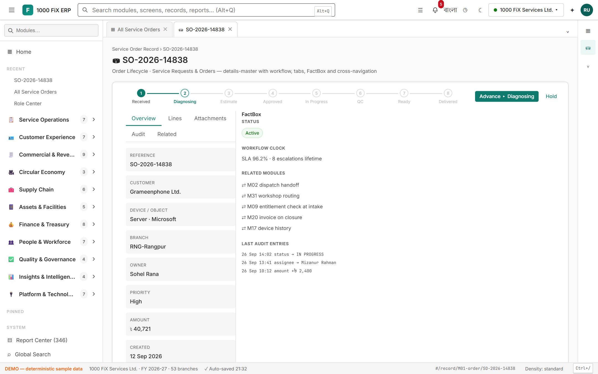
Most records carry a business process flow — the horizontal stepper showing the document's life. For a service order: Received → Diagnosing → Estimate → Approved → In Progress → QC → Ready → Delivered.
- Open a record from any grid or search result.
- Advance the stage by clicking the next step — the system may require fields (e.g. diagnosis notes) before allowing it.
- The FactBox (right) shows related facts: customer, device, warranty, history — no navigation needed.
- Tabs across the record hold Lines, Documents and the Audit history (who changed what, when).
2.3 Filling forms — and why validation is your friend
Data-entry forms (266 of them) share one behaviour: required fields are checked before save, and invalid values are flagged immediately in red. This is deliberate — a correct form once beats ten corrections downstream (an invoice with a wrong BIN costs an hour at the bank).
2.4 Running reports
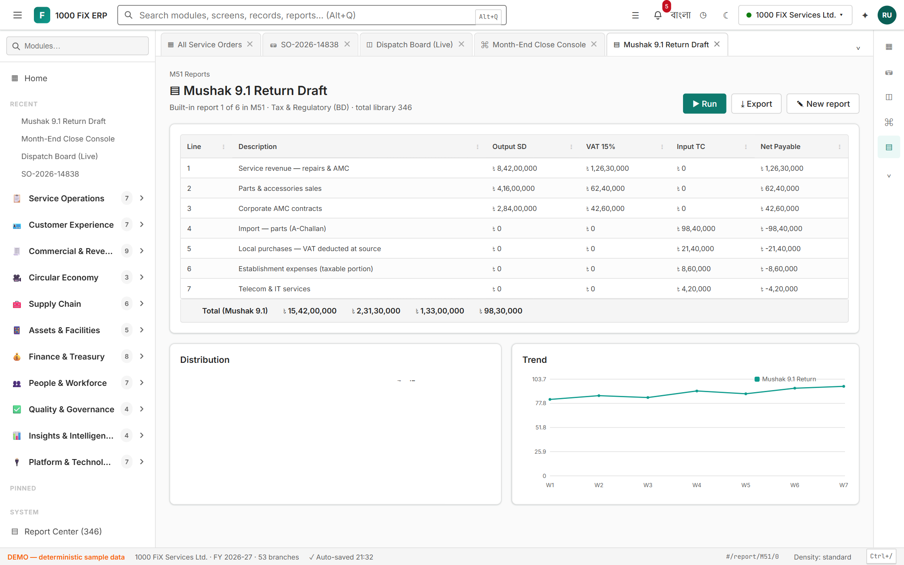
- Open the Report Center (
#/reports) — 346 built-ins browsable by module — or find one by name in Tell-ME. - Set parameters (branch, period), press Run.
- Export XLSX / CSV / PDF, or Schedule it (e.g. every Monday 08:00 to your inbox).
2.5 Creating your own report — the 7-step writer
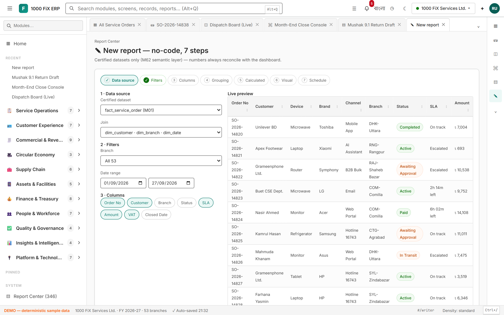
When no built-in answers your question, the Report Writer wizard builds one in minutes — no SQL, no IT ticket. Your saved reports appear in the Report Center next to the built-ins and can be shared with your team.
2.6 Dashboards, consoles and 360° views
Dashboard
Live charts and KPIs for monitoring (e.g. the Order Operations Board). Every tile drills into records.
Console
A guided checklist screen for periodic work — e.g. period-end close: every task with status, owner and sign-off.
360° view
One subject (customer, device, supplier) with everything about it — profile, transactions, history — on one screen.
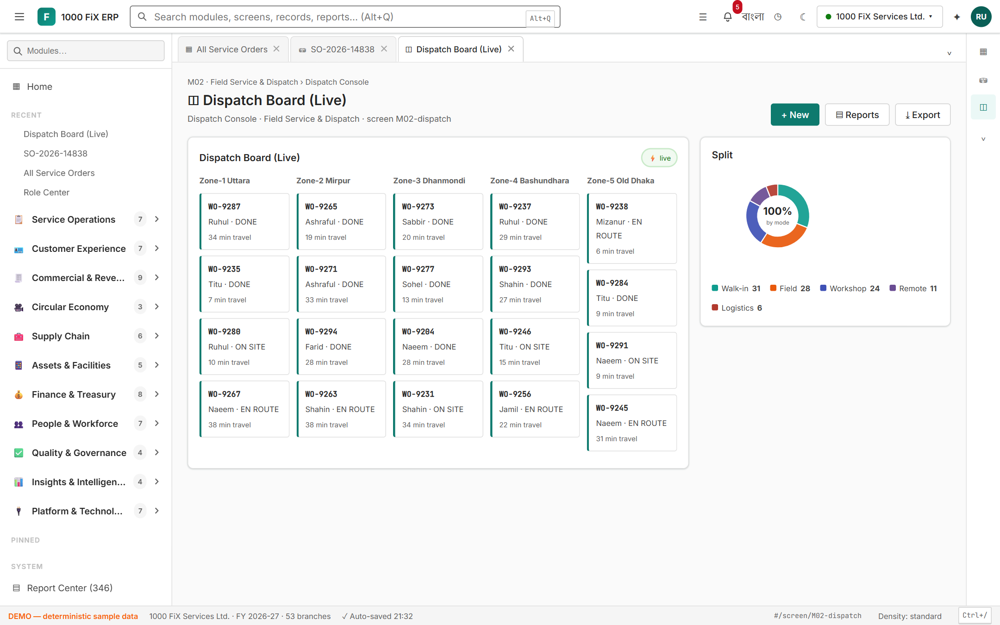
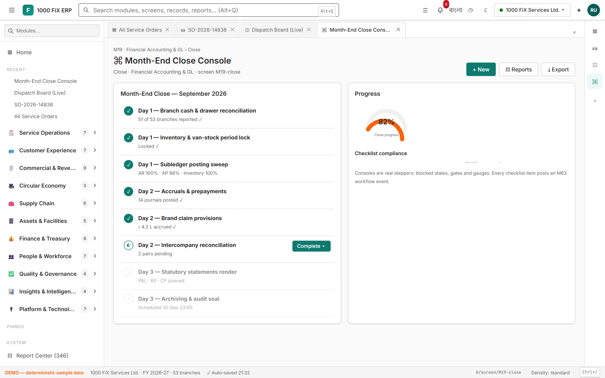
2.7 Search, Directory and Coverage
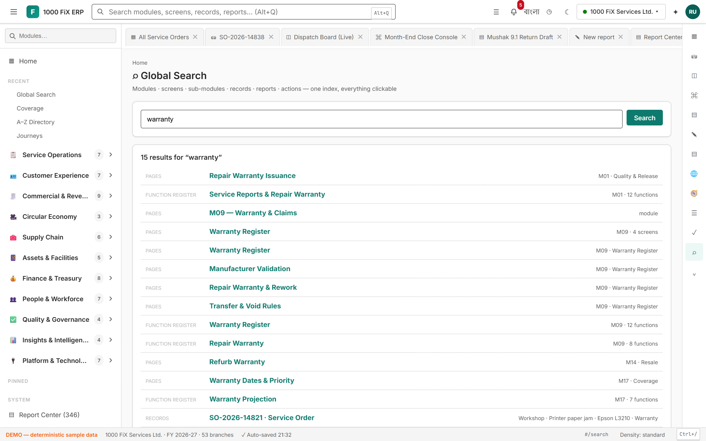
- Search page (
#/search) — the full-power search behind Tell-ME: screens, modules, reports and sample records, in both languages. - A–Z Directory (
#/directory) — every module and screen in one alphabetical list. - Coverage (
#/coverage) — the machine-checked map of the whole ERP: every module's screens, reports, forms and functions. Use it to discover what exists before asking for anything new.
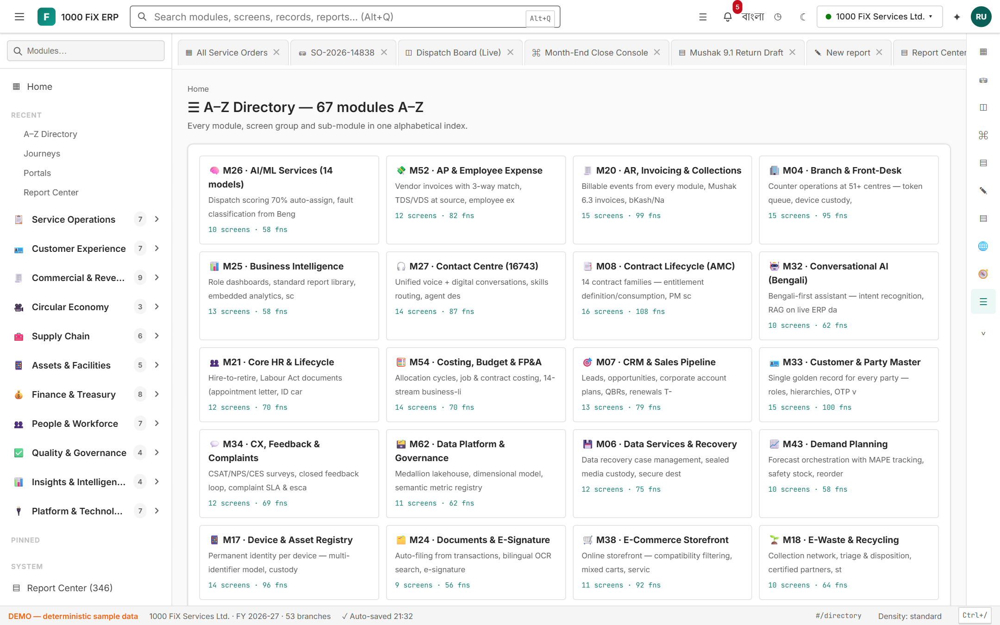
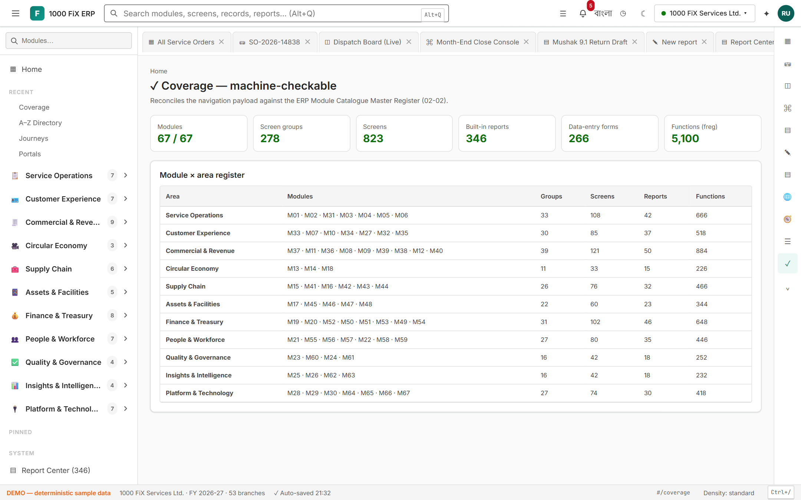
2.8 The Report Center
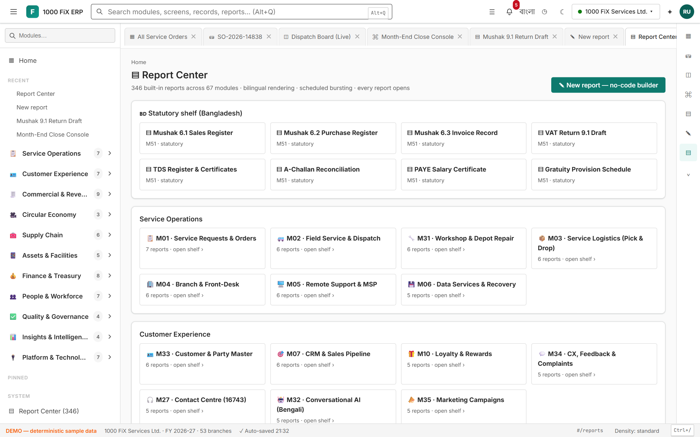
Part 3 · The map of the system
Before the module detail, hold the whole picture: eleven business areas (plus Home) carry the 67 modules. The same structure you see here is the left navigation in the app — learn the map once, navigate forever.
| Area | What it covers | Modules | Key numbers |
|---|---|---|---|
| A02 Service Operations | The heart of 1000 FiX — receiving, dispatching, repairing and returning customer devices across branches, field visits and the workshop. | 7 M01 M02 M31 M03 M04 M05 M06 | 108 screens 42 reports 666 functions |
| A03 Customer Experience | Everything customer-facing before and after the repair: the customer database, sales pipeline, loyalty, complaints, the 16743 hotline, Bengali chatbot and campaigns. | 7 M33 M07 M10 M34 M27 M32 M35 | 85 screens 37 reports 518 functions |
| A04 Commercial & Revenue | How services are priced, sold and contracted: catalogue, rate cards, quotations and tenders, AMC contracts, warranty, subscriptions, e-commerce, marketplace and partners. | 9 M37 M11 M36 M08 M09 M39 M38 M12 M40 | 121 screens 50 reports 884 functions |
| A05 Circular Economy | Circular-economy business lines: device rental / Device-as-a-Service, trade-in and refurbishment, and certified e-waste recycling. | 3 M13 M14 M18 | 33 screens 15 reports 226 functions |
| A06 Supply Chain | Spare parts and materials: inventory across branches and central warehouse, procurement, suppliers, demand planning and import compliance. | 6 M15 M41 M16 M42 M43 M44 | 76 screens 32 reports 466 functions |
| A07 Assets & Facilities | The physical backbone: customer device registry, company assets and test equipment, fleet, branch infrastructure and IoT telemetry. | 5 M17 M45 M46 M47 M48 | 60 screens 23 reports 344 functions |
| A08 Finance & Treasury | Money: general ledger, receivables and invoicing, payables and expenses, treasury and banking, Bangladesh tax, revenue recognition, fixed assets and FP&A. | 8 M19 M20 M52 M50 M51 M53 M49 M54 | 102 screens 46 reports 648 functions |
| A09 People & Workforce | People: HR lifecycle, attendance and rostering, payroll with statutory deductions, performance and incentives, learning, recruitment, and health & safety. | 7 M21 M55 M56 M57 M22 M58 M59 | 80 screens 35 reports 446 functions |
| A10 Quality & Governance | Trust: ISO 9001 quality management, governance and risk, documents with e-signature, and the technical knowledge library. | 4 M23 M60 M24 M61 | 42 screens 18 reports 252 functions |
| A11 Insights & Intelligence | Insight: BI dashboards, the AI/ML model portfolio, the governed data platform, and process automation (RPA-style jobs). | 4 M25 M26 M62 M63 | 42 screens 18 reports 232 functions |
| A12 Platform & Technology | The foundation: integrations and APIs, identity and security, platform administration, master data, multi-entity localisation, internal IT, and projects. | 7 M28 M29 M30 M64 M65 M66 M67 | 74 screens 30 reports 418 functions |
Part 4 · The 67 modules, area by area
Each area opens with its business context; each module page follows the same rhythm — what it is, a screenshot, how you use it step by step, the business knowledge behind it, what you personally gain, then the reference tables (screens, reports, forms, function register).
#/coverage screen verifies it.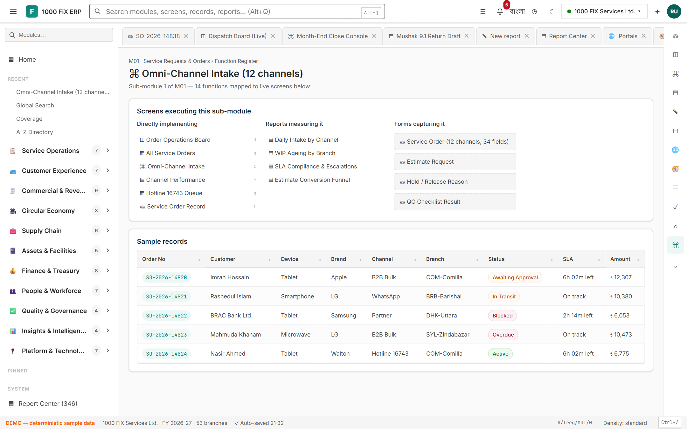
#/freg/M01/0 shown).A02 — Service Operations সার্ভিস অপারেশন
The heart of 1000 FiX — receiving, dispatching, repairing and returning customer devices across branches, field visits and the workshop.
The business of this area
After-sales service lives or dies on three numbers: SLA compliance (did we respond in the promised time), TAT — turnaround time (how long the device was with us), and First-Time-Fix rate (repairs completed without a repeat fault). Every module in this area feeds those numbers. In Bangladesh, device custody documentation also matters: a signed job sheet at intake is the legal proof of what the customer handed over.
Why it matters to you
- One order object carries a device from first call to delivery
- Custody, diagnosis, estimate, approval and QC are captured as structured steps — not paper notes
- Dispatch balances skill, zone and travel time
M01 Service Requests & Orders · M02 Field Service & Dispatch · M31 Workshop & Depot Repair · M03 Service Logistics (Pick & Drop) · M04 Branch & Front-Desk · M05 Remote Support & MSP · M06 Data Services & Recovery
Service Requests & Orders
সার্ভিস অর্ডার
Turns every customer request — hotline, web, app, branch walk-in or B2B feed — into one tracked service order with device custody, diagnosis, estimate, approval, repair and QC stages.
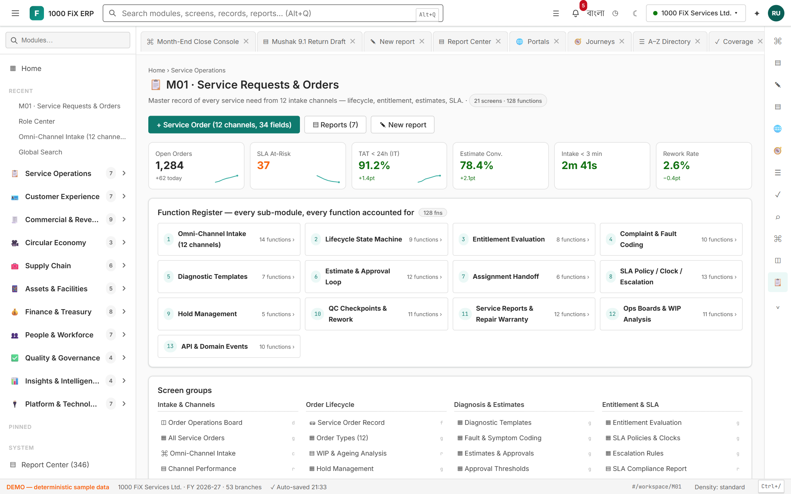
How you use it
- Open the Order Operations Board (a dashboard) to see live WIP by stage and branch
- Create a new order from the Omni-Channel Intake screen — channel, customer, device serial and stated fault
- Use All Service Orders (grid) with filters: branch, stage, SLA state, age
- Open any order — the record page shows the 8-step process bar (Received → Diagnosing → Estimate → Approved → In Progress → QC → Ready → Delivered); click a stage to move it
- Close the loop with SLA Compliance Report and Order Cycle-Time (TAT) Distribution
Business knowledge
The service order is the legal and operational spine: custody started when the customer signed intake, estimate approval protects margin, QC gates repeat faults. The 12 intake channels ensure nothing arrives "off the books".
What you gain
Nothing is lost between phone call and delivery — every device is always in a known stage with a known owner.
Key screens (21)
| Group | Screen | Type |
|---|---|---|
| Intake & Channels | | |
| ||
| ||
| ||
| ||
| Order Lifecycle | | |
| ||
| ||
| ||
| ||
| Diagnosis & Estimates | | |
| ||
| ||
| ||
| Entitlement & SLA | | |
| ||
| ||
| ||
| Quality & Release | | |
| ||
|
Built-in reports (7)
- Daily Intake by Channel
- WIP Ageing by Branch
- SLA Compliance & Escalations
- Estimate Conversion Funnel
- Rework & Repeat-Fault Analysis
- Order Cycle-Time (TAT) Distribution
- Uncollected Device Register
Data-entry forms (4)
- Service Order (12 channels, 34 fields)
- Estimate Request
- Hold / Release Reason
- QC Checklist Result
Function register — 128 functions in 13 sub-modules
| # | Sub-module | Functions |
|---|---|---|
| 1 | Omni-Channel Intake (12 channels) | 14 |
| 2 | Lifecycle State Machine | 9 |
| 3 | Entitlement Evaluation | 8 |
| 4 | Complaint & Fault Coding | 10 |
| 5 | Diagnostic Templates | 7 |
| 6 | Estimate & Approval Loop | 12 |
| 7 | Assignment Handoff | 6 |
| 8 | SLA Policy / Clock / Escalation | 13 |
| 9 | Hold Management | 5 |
| 10 | QC Checkpoints & Rework | 11 |
| 11 | Service Reports & Repair Warranty | 12 |
| 12 | Ops Boards & WIP Analysis | 11 |
| 13 | API & Domain Events | 10 |
Field Service & Dispatch
ফিল্ড সার্ভিস ও ডিসপ্যাচ
Assigns field jobs to the right technician based on skill, zone and travel, and tracks them to completion on the dispatch board.
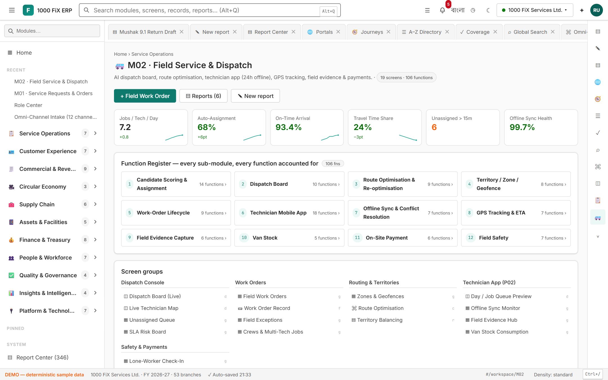
How you use it
- Open the Dispatch Board — columns are zones (Dhanmondi, Mirpur, Uttara…), cards are open work orders with tech and travel minutes
- Drag/click-assign a card: the Candidate Scoring panel ranks technicians by skill match, load and distance
- Track status in real time (EN ROUTE → ON SITE → DONE) as technicians update from their mobile portal
- Review the day in the Dispatch Performance by Zone and Travel-Time reports
Business knowledge
Dispatch quality = first-time-fix + travel cost. Skills-based assignment avoids the classic "wrong tech, second visit" failure; zone columns expose imbalance at a glance.
What you gain
The right technician reaches the right customer first time — fewer repeat visits, lower fuel cost, happier customers.
Key screens (19)
| Group | Screen | Type |
|---|---|---|
| Dispatch Console | | |
| ||
| ||
| ||
| Work Orders | | |
| ||
| ||
| ||
| Routing & Territories | | |
| ||
| ||
| Technician App (P02) | | |
| ||
| ||
| ||
| Safety & Payments | | |
| ||
| ||
|
Built-in reports (6)
- Dispatch Performance by Zone
- Travel-Time Analysis
- Jobs per Technician
- Field Exception Summary
- Van Stock Variance
- On-Site Payment Reconciliation
Data-entry forms (4)
- Field Work Order
- Field Exception Report
- Crew Assignment
- Route Plan
Function register — 106 functions in 12 sub-modules
| # | Sub-module | Functions |
|---|---|---|
| 1 | Candidate Scoring & Assignment | 14 |
| 2 | Dispatch Board | 10 |
| 3 | Route Optimisation & Re-optimisation | 9 |
| 4 | Territory / Zone / Geofence | 8 |
| 5 | Work-Order Lifecycle | 9 |
| 6 | Technician Mobile App | 18 |
| 7 | Offline Sync & Conflict Resolution | 7 |
| 8 | GPS Tracking & ETA | 7 |
| 9 | Field Evidence Capture | 6 |
| 10 | Van Stock | 5 |
| 11 | On-Site Payment | 6 |
| 12 | Field Safety | 7 |
Workshop & Depot Repair
ওয়ার্কশপ মেরামত
Runs the central workshop: bench repair orders, workshop capacity, technician load and internal QC for jobs too complex for field or branch.
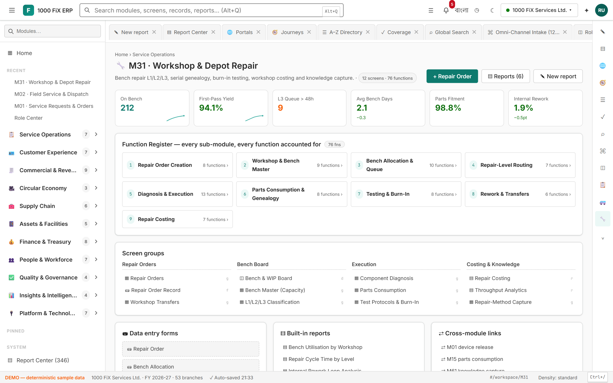
How you use it
- Create a Workshop Repair Order when a device is escalated to bench level
- Use Bench & Board views to see jobs per bench and per technician
- Move devices through Receive → Diagnose → Await Parts → Repair → QC stages, mirroring the physical bench card
- Review Repair Cycle Time by Level and the Internal Rework Loop weekly
Business knowledge
Depot repair is batch-efficient but risky for queueing — WIP ageing per bench exposes stuck devices before customers complain. Rework rate measures internal quality.
What you gain
No device sleeps on a bench unnoticed — ageing and rework are visible and owned.
Key screens (12)
| Group | Screen | Type |
|---|---|---|
| Repair Orders | | |
| ||
| ||
| Bench Board | | |
| ||
| ||
| Execution | | |
| ||
| ||
| Costing & Knowledge | | |
| ||
|
Built-in reports (6)
- Bench Utilisation by Workshop
- Repair Cycle Time by Level
- Internal Rework Loop Analysis
- Workshop Cost per Repair
- Parts Genealogy Trace
- Burn-In Failure Report
Data-entry forms (4)
- Repair Order
- Bench Allocation
- Test Protocol Result
- Workshop Transfer
Function register — 76 functions in 9 sub-modules
| # | Sub-module | Functions |
|---|---|---|
| 1 | Repair Order Creation | 8 |
| 2 | Workshop & Bench Master | 9 |
| 3 | Bench Allocation & Queue | 10 |
| 4 | Repair-Level Routing | 7 |
| 5 | Diagnosis & Execution | 13 |
| 6 | Parts Consumption & Genealogy | 8 |
| 7 | Testing & Burn-In | 8 |
| 8 | Rework & Transfers | 6 |
| 9 | Repair Costing | 7 |
Service Logistics (Pick & Drop)
সার্ভিস লজিস্টিক
Manages pickup and delivery logistics: consignments, multi-leg journeys (customer → branch → workshop → back) and courier integration.
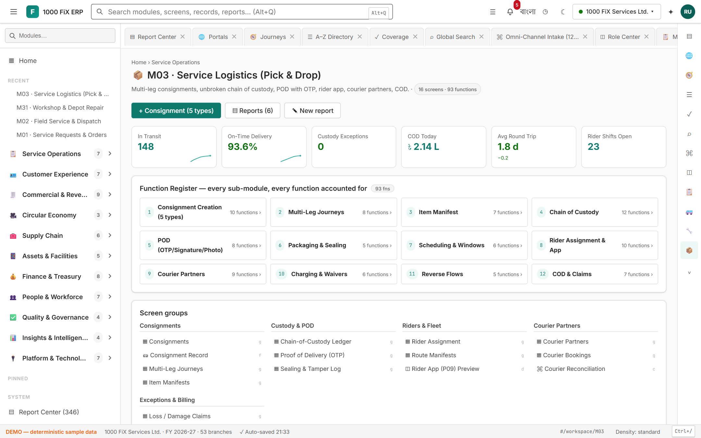
How you use it
- Create a consignment (5 types: field pickup, branch transfer, workshop send, return, direct delivery)
- Track legs on the journey board — each leg has a carrier, status and proof
- Reconcile courier invoices against delivered legs
- Monitor Consignment Cycle Time and Courier Performance (Pathao/RedX/Steadfast)
Business knowledge
Pick & drop is a promise: "we collect in 2 hours". Multi-leg visibility prevents the classic loss point — the device that made it to the courier but never checked in at the workshop.
What you gain
Every device in transit has a live location and proof of each handover — zero "where is it?" escalations.
Key screens (16)
| Group | Screen | Type |
|---|---|---|
| Consignments | | |
| ||
| ||
| ||
| Custody & POD | | |
| ||
| ||
| Riders & Fleet | | |
| ||
| ||
| Courier Partners | | |
| ||
| ||
| Exceptions & Billing | | |
| ||
|
Built-in reports (6)
- Consignment Cycle Time
- Custody Exception Register
- Courier Performance (Pathao/RedX/Steadfast)
- COD Settlement Report
- Reverse Logistics Volume
- Damage & Insurance Claims
Data-entry forms (4)
- Consignment (5 types)
- Rider Shift Open/Close
- Courier Booking
- Damage Claim
Function register — 93 functions in 12 sub-modules
| # | Sub-module | Functions |
|---|---|---|
| 1 | Consignment Creation (5 types) | 10 |
| 2 | Multi-Leg Journeys | 8 |
| 3 | Item Manifest | 7 |
| 4 | Chain of Custody | 12 |
| 5 | POD (OTP/Signature/Photo) | 8 |
| 6 | Packaging & Sealing | 5 |
| 7 | Scheduling & Windows | 6 |
| 8 | Rider Assignment & App | 10 |
| 9 | Courier Partners | 9 |
| 10 | Charging & Waivers | 6 |
| 11 | Reverse Flows | 5 |
| 12 | COD & Claims | 7 |
Branch & Front-Desk
শাখা ও ফ্রন্ট ডেস্ক
Digitises the branch experience: token queue, counter workstation, cash desk and end-of-day cash declaration.
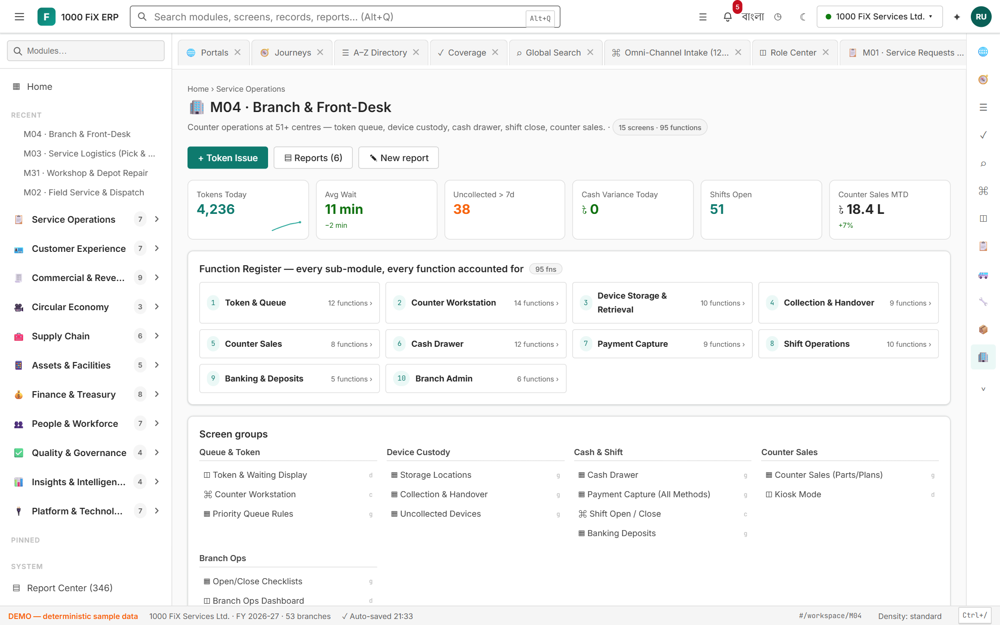
How you use it
- Walk-in customers take a token (kiosk or desk) — the Token & Waiting Display shows live wait per counter
- Counter staff use the Counter Workstation screen: serve token → find customer → create/receive order
- The cash desk records payments (cash, card, bKash, Nagad) via Payment Capture
- End of day: the Shift Close screen balances the cash drawer against the system — discrepancies need a reason code
Business knowledge
Token discipline converts a crowd into a measurable queue: average wait and serve times become numbers you manage. Daily shift-close balancing with reason-coded variance is basic retail hygiene and an ISO control.
What you gain
Branches run the same way every day; cash differences are caught same-evening, not month-end.
Key screens (15)
| Group | Screen | Type |
|---|---|---|
| Queue & Token | | |
| ||
| ||
| Device Custody | | |
| ||
| ||
| Cash & Shift | | |
| ||
| ||
| ||
| Counter Sales | | |
| ||
| Branch Ops | | |
| ||
|
Built-in reports (6)
- Branch Daily Cash Summary
- Token Wait-Time Distribution
- Uncollected Device Ageing
- Counter Sales by Category
- Shift Variance Register
- Branch Comparison League
Data-entry forms (5)
- Token Issue
- Device Storage Assignment
- Shift Open/Close
- Counter Sale
- Handover (ID verified)
Function register — 95 functions in 10 sub-modules
| # | Sub-module | Functions |
|---|---|---|
| 1 | Token & Queue | 12 |
| 2 | Counter Workstation | 14 |
| 3 | Device Storage & Retrieval | 10 |
| 4 | Collection & Handover | 9 |
| 5 | Counter Sales | 8 |
| 6 | Cash Drawer | 12 |
| 7 | Payment Capture | 9 |
| 8 | Shift Operations | 10 |
| 9 | Banking & Deposits | 5 |
| 10 | Branch Admin | 6 |
Remote Support & MSP
রিমোট সাপোর্ট ও এমএসপি
Remote support sessions and the managed-device estate: remote diagnosis, health scoring and preventive interventions.
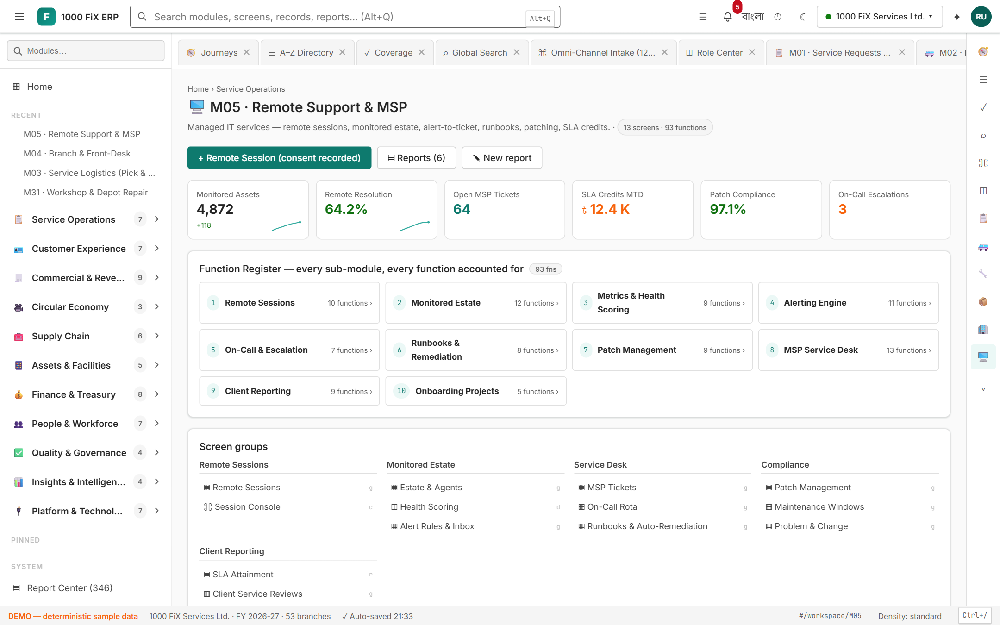
How you use it
- Open a remote session from a service order — tools and session notes are logged
- Monitor the estate dashboard: devices by health score and risk
- Push preventive actions (cleanup, updates) to amber devices before they turn red
- Review Remote Resolution Rate and MSP SLA Attainment by Client — every remote fix is a field visit saved
Business knowledge
MSP economics: a resolved-remote session costs a fraction of a field visit. Health scoring from telemetry (disk, temperature, uptime) predicts failures; fixing remotely is the margin.
What you gain
Many problems disappear without a truck roll — customers faster served, technicians freed for real repairs.
Key screens (13)
| Group | Screen | Type |
|---|---|---|
| Remote Sessions | | |
| ||
| Monitored Estate | | |
| ||
| ||
| Service Desk | | |
| ||
| ||
| Compliance | | |
| ||
| ||
| Client Reporting | | |
|
Built-in reports (6)
- MSP SLA Attainment by Client
- Remote Resolution Rate
- Patch Compliance Report
- Alert-to-Ticket Conversion
- Backup & Restore Test Log
- SLA Credit Register
Data-entry forms (4)
- Remote Session (consent recorded)
- MSP Ticket
- Change Record
- Maintenance Window
Function register — 93 functions in 10 sub-modules
| # | Sub-module | Functions |
|---|---|---|
| 1 | Remote Sessions | 10 |
| 2 | Monitored Estate | 12 |
| 3 | Metrics & Health Scoring | 9 |
| 4 | Alerting Engine | 11 |
| 5 | On-Call & Escalation | 7 |
| 6 | Runbooks & Remediation | 8 |
| 7 | Patch Management | 9 |
| 8 | MSP Service Desk | 13 |
| 9 | Client Reporting | 9 |
| 10 | Onboarding Projects | 5 |
Data Services & Recovery
ডেটা সেবা ও রিকভারি
Specialist data services: recovery, migration, secure erasure and forensic handling with chain of custody.
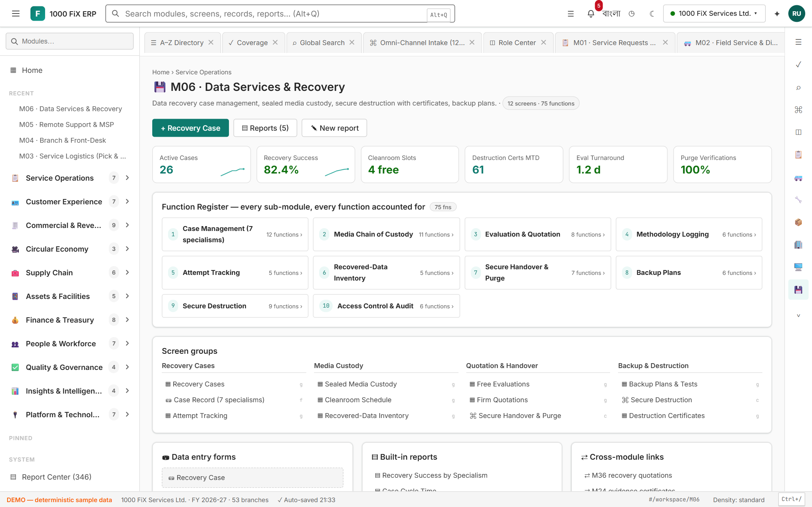
How you use it
- Create a data-service case with the 7 specialism types (recovery, migration, wipe…)
- Record media condition and chain-of-custody events at every handover
- Track the case through evaluation → attempt → result with customer approval gates
- Issue the completion certificate from the case
Business knowledge
Data work is high-value and high-liability: chain of custody protects against "you lost my photos" disputes; secure erasure follows standards because certificates are audited.
What you gain
High-value jobs carry zero ambiguity about what was received, attempted and returned.
Key screens (12)
| Group | Screen | Type |
|---|---|---|
| Recovery Cases | | |
| ||
| ||
| Media Custody | | |
| ||
| ||
| Quotation & Handover | | |
| ||
| ||
| Backup & Destruction | | |
| ||
|
Built-in reports (5)
- Recovery Success by Specialism
- Case Cycle Time
- Data Service Revenue
- Destruction & Purge Audit
- Backup Restore-Test Compliance
Data-entry forms (4)
- Recovery Case
- Media Intake (sealed)
- Firm Quotation
- Destruction Request (dual control)
Function register — 75 functions in 10 sub-modules
| # | Sub-module | Functions |
|---|---|---|
| 1 | Case Management (7 specialisms) | 12 |
| 2 | Media Chain of Custody | 11 |
| 3 | Evaluation & Quotation | 8 |
| 4 | Methodology Logging | 6 |
| 5 | Attempt Tracking | 5 |
| 6 | Recovered-Data Inventory | 5 |
| 7 | Secure Handover & Purge | 7 |
| 8 | Backup Plans | 6 |
| 9 | Secure Destruction | 9 |
| 10 | Access Control & Audit | 6 |
A03 — Customer Experience গ্রাহক অভিজ্ঞতা
Everything customer-facing before and after the repair: the customer database, sales pipeline, loyalty, complaints, the 16743 hotline, Bengali chatbot and campaigns.
The business of this area
A "party master" keeps one identity per customer across phone, walk-in, e-commerce and B2B accounts — duplicates destroy loyalty points and warranty lookups. The hotline 16743 is the company’s front door; its queue, IVR and callback discipline directly set perceived service quality. CSAT after each job and NPS per quarter are the standard experience measures.
Why it matters to you
- One customer, one record — history, warranty and loyalty always visible
- Complaints are tracked to closure with root-cause codes, feeding ISO 9001 corrective actions
- The Bengali chatbot deflects routine "where is my device?" calls
M33 Customer & Party Master · M07 CRM & Sales Pipeline · M10 Loyalty & Rewards · M34 CX, Feedback & Complaints · M27 Contact Centre (16743) · M32 Conversational AI (Bengali) · M35 Marketing Campaigns
Customer & Party Master
গ্রাহক মাস্টার
The single source of truth for every person and organisation 1000 FiX deals with — customers, prospects, suppliers-as-parties, staff-as-users.
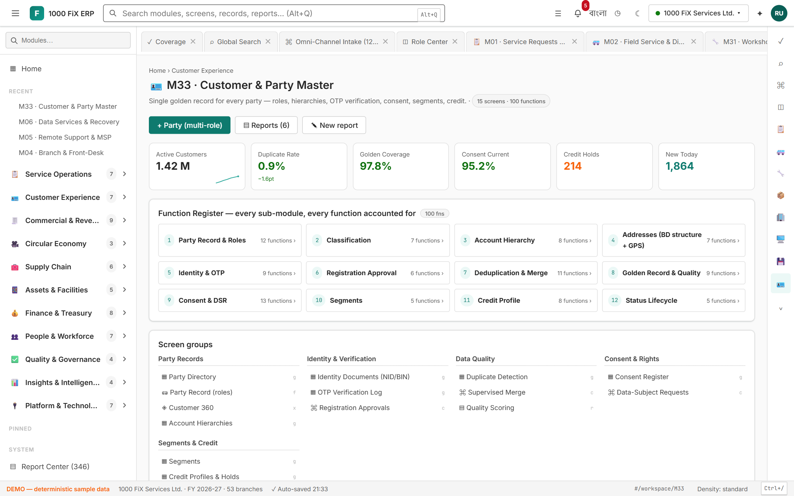
How you use it
- Search the party register (grid) by phone, NID, BIN or name — duplicates are blocked at save
- Open a party record: roles (customer/employee/partner), communication defaults, KYC status
- Maintain account hierarchies for B2B groups (holding company → branches)
- Review new/merged parties in the data-steward queue
Business knowledge
One party, many roles. Phone-number dedup is the #1 defence against double loyalty accounts and split histories. B2B hierarchies roll up revenue and AMC coverage correctly.
What you gain
Anyone can answer "who is this customer and what is our history?" in seconds.
Key screens (15)
| Group | Screen | Type |
|---|---|---|
| Party Records | | |
| ||
| ||
| ||
| Identity & Verification | | |
| ||
| ||
| Data Quality | | |
| ||
| ||
| Consent & Rights | | |
| ||
| Segments & Credit | | |
| ||
|
Built-in reports (6)
- Customer Growth by District
- Data Quality Scorecard
- Duplicate Merge Audit
- Consent Coverage Report
- Credit Exposure by Segment
- Corporate Hierarchy Map
Data-entry forms (5)
- Party (multi-role)
- Address with GPS
- Identity Document
- Credit Profile
- Merge Request
Function register — 100 functions in 12 sub-modules
| # | Sub-module | Functions |
|---|---|---|
| 1 | Party Record & Roles | 12 |
| 2 | Classification | 7 |
| 3 | Account Hierarchy | 8 |
| 4 | Addresses (BD structure + GPS) | 7 |
| 5 | Identity & OTP | 9 |
| 6 | Registration Approval | 6 |
| 7 | Deduplication & Merge | 11 |
| 8 | Golden Record & Quality | 9 |
| 9 | Consent & DSR | 13 |
| 10 | Segments | 5 |
| 11 | Credit Profile | 8 |
| 12 | Status Lifecycle | 5 |
CRM & Sales Pipeline
সিআরএম ও বিক্রয়
The sales pipeline: leads, qualification, opportunities, quotes and won/lost analysis for B2B service contracts.
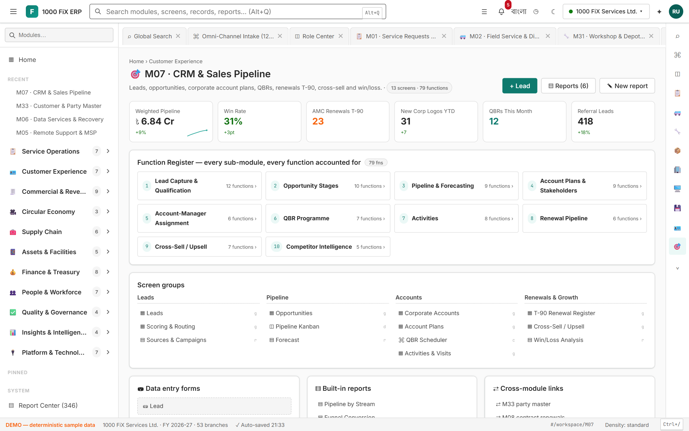
How you use it
- Capture a lead (web form, event, call) and qualify it against the scoring card
- Convert qualified leads to opportunities with stage, value and expected close
- Attach a quotation (from M36) and track the deal through the pipeline board
- Analyse conversion and cycle-time by source and owner
Business knowledge
Pipeline discipline — stage definitions and exit criteria — is what makes revenue forecasts credible. Lead source attribution shows which channel actually produces contracts.
What you gain
Sales leaders see true coverage of the target; nothing sits forgotten in a notebook.
Key screens (13)
| Group | Screen | Type |
|---|---|---|
| Leads | | |
| ||
| ||
| Pipeline | | |
| ||
| ||
| Accounts | | |
| ||
| ||
| ||
| Renewals & Growth | | |
| ||
|
Built-in reports (6)
- Pipeline by Stream
- Funnel Conversion
- Win Rate by Source
- Account Manager Scorecard
- Renewal Risk Report
- Cross-Sell Attach Rate
Data-entry forms (4)
- Lead
- Opportunity
- Activity (call/visit/meeting)
- Account Plan
Function register — 79 functions in 10 sub-modules
| # | Sub-module | Functions |
|---|---|---|
| 1 | Lead Capture & Qualification | 12 |
| 2 | Opportunity Stages | 10 |
| 3 | Pipeline & Forecasting | 9 |
| 4 | Account Plans & Stakeholders | 9 |
| 5 | Account-Manager Assignment | 6 |
| 6 | QBR Programme | 7 |
| 7 | Activities | 8 |
| 8 | Renewal Pipeline | 6 |
| 9 | Cross-Sell / Upsell | 7 |
| 10 | Competitor Intelligence | 5 |
Loyalty & Rewards
লয়্যালটি ও পুরস্কার
Loyalty programme: tiers, enrolment, points ledger, benefit engine and redemption.
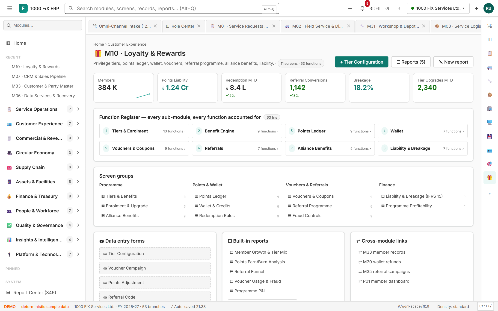
How you use it
- Enrol a customer at intake — tier starts at Base
- Points accrue automatically from completed, paid orders; the ledger shows every earn/burn line
- Redeem points at the cash desk as a payment line
- Run the liability and breakage report for finance
Business knowledge
Points are a balance-sheet liability — finance must know the outstanding balance. Tier benefits (priority queue, discount rates) are contractual promises the engine enforces consistently.
What you gain
Repeat customers are recognised automatically — retention becomes a system behaviour, not a memory game.
Key screens (11)
| Group | Screen | Type |
|---|---|---|
| Programme | | |
| ||
| ||
| Points & Wallet | | |
| ||
| ||
| Vouchers & Referrals | | |
| ||
| ||
| Finance | | |
|
Built-in reports (5)
- Member Growth & Tier Mix
- Points Earn/Burn Analysis
- Referral Funnel
- Voucher Usage & Fraud
- Programme P&L
Data-entry forms (4)
- Tier Configuration
- Voucher Campaign
- Points Adjustment
- Referral Code
Function register — 63 functions in 8 sub-modules
| # | Sub-module | Functions |
|---|---|---|
| 1 | Tiers & Enrolment | 10 |
| 2 | Benefit Engine | 9 |
| 3 | Points Ledger | 9 |
| 4 | Wallet | 7 |
| 5 | Vouchers & Coupons | 9 |
| 6 | Referrals | 7 |
| 7 | Alliance Benefits | 5 |
| 8 | Liability & Breakage | 7 |
CX, Feedback & Complaints
অভিজ্ঞতা ও অভিযোগ
Experience measurement and complaint management: surveys, CSAT/NPS/CES, complaint cases to closure with root cause.
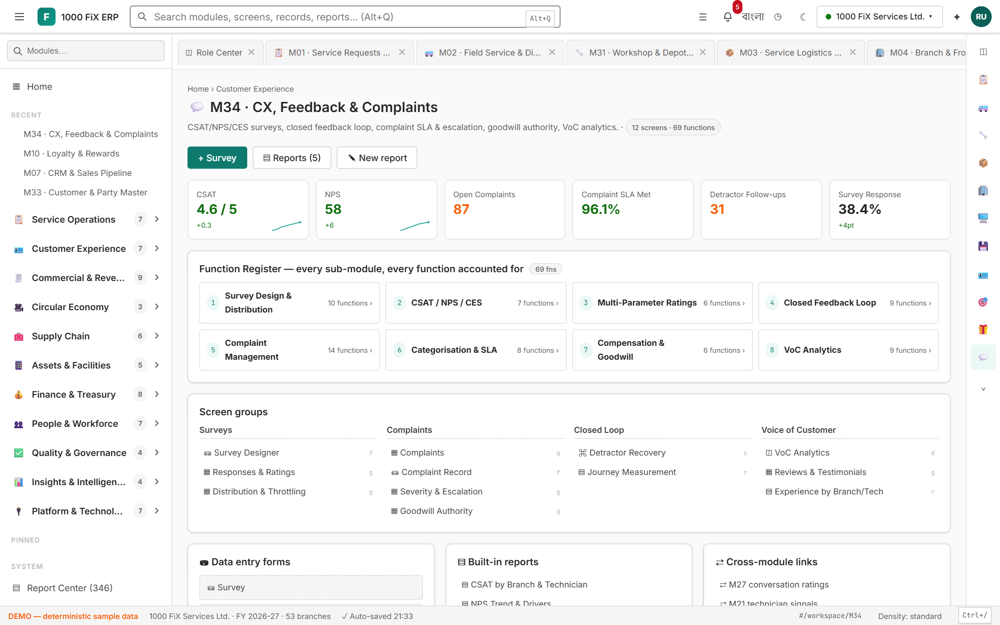
How you use it
- Surveys fire automatically after job closure (SMS/portal) — CSAT, NPS and CES questions
- Review the experience dashboard: score trends by branch, service line and technician
- Log a complaint case, classify it, assign an owner and drive it to closure with root-cause coding
- Feed systemic root causes into M23 CAPA
Business knowledge
CSAT after every job, NPS quarterly — the industry-standard pair. A complaint closed without root cause will repeat; root-cause taxonomy makes month-over-month improvement measurable.
What you gain
Bad experiences are caught and fixed before they become reviews; good ones are recognised.
Key screens (12)
| Group | Screen | Type |
|---|---|---|
| Surveys | | |
| ||
| ||
| Complaints | | |
| ||
| ||
| ||
| Closed Loop | | |
| ||
| Voice of Customer | | |
| ||
|
Built-in reports (5)
- CSAT by Branch & Technician
- NPS Trend & Drivers
- Complaint Category Pareto
- Closed-Loop Effectiveness
- Review Sentiment Summary
Data-entry forms (4)
- Survey
- Complaint
- Goodwill Credit
- Detractor Follow-up
Function register — 69 functions in 8 sub-modules
| # | Sub-module | Functions |
|---|---|---|
| 1 | Survey Design & Distribution | 10 |
| 2 | CSAT / NPS / CES | 7 |
| 3 | Multi-Parameter Ratings | 6 |
| 4 | Closed Feedback Loop | 9 |
| 5 | Complaint Management | 14 |
| 6 | Categorisation & SLA | 8 |
| 7 | Compensation & Goodwill | 6 |
| 8 | VoC Analytics | 9 |
Contact Centre (16743)
কল সেন্টার ১৬৭৪৩
The 16743 contact centre: IVR and queue design, agent desktop, callbacks and channel (voice/chat/email/social) unification.
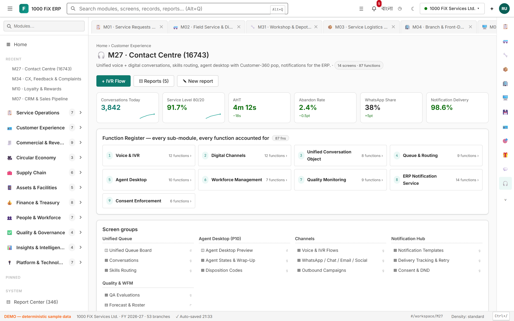
How you use it
- Agents work the unified queue — calls, chats and emails arrive in one list with customer context
- Use the agent desktop: identify party → see open orders → create or update cases in one screen
- Manage IVR flows and callback lists from the supervisor view
- Monitor live SLA (answer time, abandonment) on the wallboard
Business knowledge
Hotline 16743 is the brand. Answer-time SLA and abandonment are the two numbers a contact centre lives by; unified queue stops channel-silo blindness.
What you gain
Callers reach a person quickly, and that person already sees the caller’s history.
Key screens (14)
| Group | Screen | Type |
|---|---|---|
| Unified Queue | | |
| ||
| ||
| Agent Desktop (P10) | | |
| ||
| ||
| Channels | | |
| ||
| ||
| Notification Hub | | |
| ||
| ||
| Quality & WFM | | |
|
Built-in reports (5)
- Channel Mix & Volumes
- Service Level by Interval
- AHT & FCR by Disposition
- Notification Delivery by Channel
- QA Score Distribution
Data-entry forms (4)
- IVR Flow
- Notification Template
- Disposition Code
- Outbound List
Function register — 87 functions in 9 sub-modules
| # | Sub-module | Functions |
|---|---|---|
| 1 | Voice & IVR | 12 |
| 2 | Digital Channels | 12 |
| 3 | Unified Conversation Object | 8 |
| 4 | Queue & Routing | 9 |
| 5 | Agent Desktop | 10 |
| 6 | Workforce Management | 7 |
| 7 | Quality Monitoring | 9 |
| 8 | ERP Notification Service | 14 |
| 9 | Consent Enforcement | 6 |
Conversational AI (Bengali)
কথোপকথন এআই
The Bengali/English conversational AI that deflects routine contacts and books services 24/7.
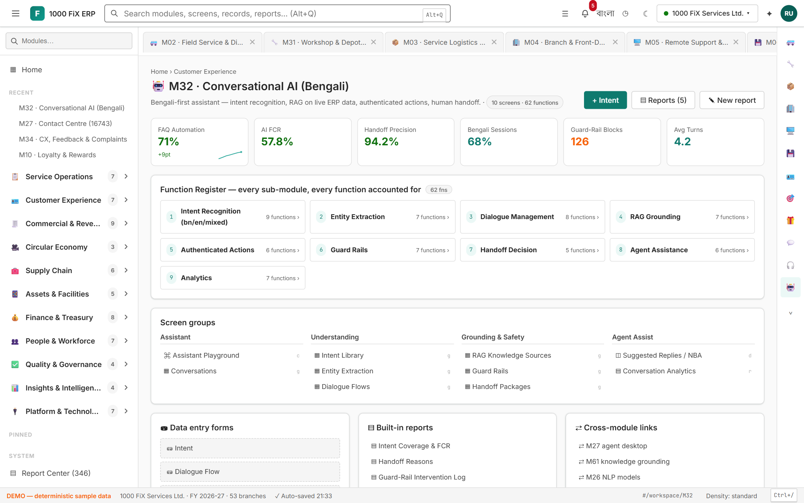
How you use it
- Deploy flows: order status, warranty check, booking, FAQ — trained on Bengali, English and mixed input
- Complex intents hand off to M27 with the transcript attached
- Review unresolved utterances weekly to grow the training set
- Track deflection rate and containment score
Business knowledge
Bangladeshi customers mix Bangla and English mid-sentence — the intent engine is trained for it. Every deflected "status check" call is agent capacity returned to complex cases.
What you gain
Customers get instant answers at 2 a.m. in Bangla; agents handle humans, not lookups.
Key screens (10)
| Group | Screen | Type |
|---|---|---|
| Assistant | | |
| ||
| Understanding | | |
| ||
| ||
| Grounding & Safety | | |
| ||
| ||
| Agent Assist | | |
|
Built-in reports (5)
- Intent Coverage & FCR
- Handoff Reasons
- Guard-Rail Intervention Log
- Bengali vs English Performance
- Assistant CSAT
Data-entry forms (3)
- Intent
- Dialogue Flow
- Guard-Rail Rule
Function register — 62 functions in 9 sub-modules
| # | Sub-module | Functions |
|---|---|---|
| 1 | Intent Recognition (bn/en/mixed) | 9 |
| 2 | Entity Extraction | 7 |
| 3 | Dialogue Management | 8 |
| 4 | RAG Grounding | 7 |
| 5 | Authenticated Actions | 6 |
| 6 | Guard Rails | 7 |
| 7 | Handoff Decision | 5 |
| 8 | Agent Assistance | 6 |
| 9 | Analytics | 7 |
Marketing Campaigns
মার্কেটিং ক্যাম্পেইন
Campaign management: plan, audience-build from segments, execute across SMS/email/portal, measure.
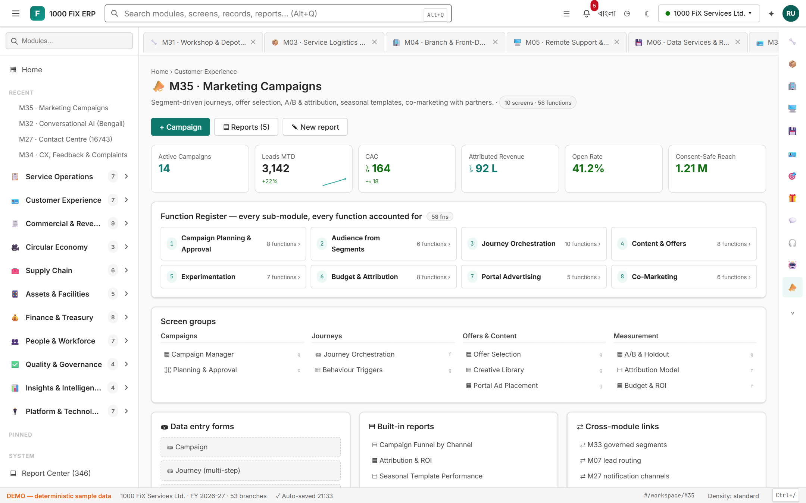
How you use it
- Plan a campaign with objective, budget and window
- Build the audience from CRM segments (e.g., AMC expiring in 30 days)
- Launch and monitor delivery/engagement
- Attribute resulting orders to the campaign code
Business knowledge
Campaign ROI only exists with attribution — the campaign code on the resulting order closes the loop. Segments computed from service history (e.g., 3-year-old devices) outperform cold lists.
What you gain
Marketing spend converts measurably into service orders.
Key screens (10)
| Group | Screen | Type |
|---|---|---|
| Campaigns | | |
| ||
| Journeys | | |
| ||
| Offers & Content | | |
| ||
| ||
| Measurement | | |
| ||
|
Built-in reports (5)
- Campaign Funnel by Channel
- Attribution & ROI
- Seasonal Template Performance
- Co-Marketing Partner Report
- Lead-to-Order Conversion
Data-entry forms (4)
- Campaign
- Journey (multi-step)
- Offer
- Creative Asset
Function register — 58 functions in 8 sub-modules
| # | Sub-module | Functions |
|---|---|---|
| 1 | Campaign Planning & Approval | 8 |
| 2 | Audience from Segments | 6 |
| 3 | Journey Orchestration | 10 |
| 4 | Content & Offers | 8 |
| 5 | Experimentation | 7 |
| 6 | Budget & Attribution | 8 |
| 7 | Portal Advertising | 5 |
| 8 | Co-Marketing | 6 |
A04 — Commercial & Revenue বাণিজ্যিক ও রাজস্ব
How services are priced, sold and contracted: catalogue, rate cards, quotations and tenders, AMC contracts, warranty, subscriptions, e-commerce, marketplace and partners.
The business of this area
AMC — Annual Maintenance Contract — is the recurring-revenue backbone of after-sales businesses: fixed yearly fee, defined response SLAs, periodic visits. quotations in Bangladesh B2B often go through formal tender submission with BOQ (bill of quantities). Warranty terms (labour vs parts, in-warranty vs out) decide who pays for a repair — the customer, 1000 FiX, or the manufacturer.
Why it matters to you
- Price consistency: the same service cannot be quoted two different amounts
- Contract SLAs and visit entitlements are enforced by the system, not memory
- Warranty checks at intake stop revenue leakage on free repairs
M37 Product & Service Catalogue · M11 Pricing & Rate Cards · M36 Quotations & Tenders · M08 Contract Lifecycle (AMC) · M09 Warranty & Claims · M39 Subscriptions & Recurring · M38 E-Commerce Storefront · M12 Marketplace & Sellers · M40 Partner & Channel
Product & Service Catalogue
পণ্য ও সেবা ক্যাটালগ
The catalogue of everything sellable: devices, spare parts, service definitions and bundles, with bilingual descriptions.
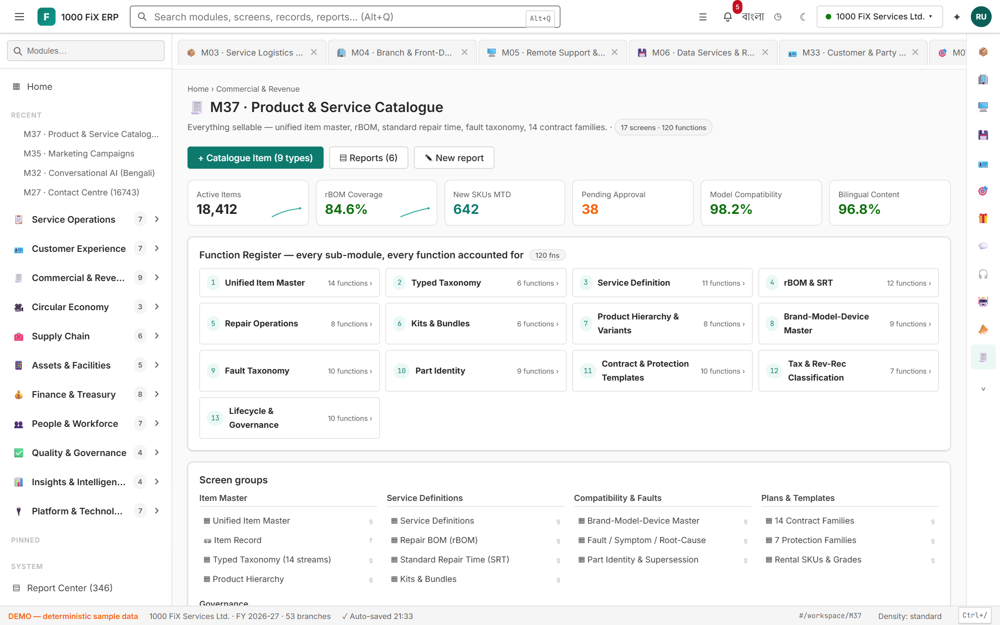
How you use it
- Maintain items in the Unified Item Master with typed taxonomy (device/part/service)
- Define service templates: included diagnostics, SLA, default duration
- Publish bundles (e.g., AMC + rental printer) and price links to M11
- Control release status — draft items are invisible to quotes until released
Business knowledge
Catalogue discipline is why quotes and invoices agree: everything billable is an item with a price hook. Typed taxonomy prevents "is it a part or a service?" arguments at invoicing.
What you gain
Whatever was sold is exactly what gets billed — no mismatch, no leakage.
Key screens (17)
| Group | Screen | Type |
|---|---|---|
| Item Master | | |
| ||
| ||
| ||
| Service Definitions | | |
| ||
| ||
| ||
| Compatibility & Faults | | |
| ||
| ||
| Plans & Templates | | |
| ||
| ||
| Governance | | |
| ||
|
Built-in reports (6)
- Catalogue Coverage by Brand
- rBOM Completeness
- SRT Calibration Variance
- Item Margin Analysis
- Deprecated Items Register
- Bilingual Content Gaps
Data-entry forms (5)
- Catalogue Item (9 types)
- Service Definition
- rBOM Line
- Fault Code
- Protection Product Template
Function register — 120 functions in 13 sub-modules
| # | Sub-module | Functions |
|---|---|---|
| 1 | Unified Item Master | 14 |
| 2 | Typed Taxonomy | 6 |
| 3 | Service Definition | 11 |
| 4 | rBOM & SRT | 12 |
| 5 | Repair Operations | 8 |
| 6 | Kits & Bundles | 6 |
| 7 | Product Hierarchy & Variants | 8 |
| 8 | Brand-Model-Device Master | 9 |
| 9 | Fault Taxonomy | 10 |
| 10 | Part Identity | 9 |
| 11 | Contract & Protection Templates | 10 |
| 12 | Tax & Rev-Rec Classification | 7 |
| 13 | Lifecycle & Governance | 10 |
Pricing & Rate Cards
মূল্য ও রেট কার্ড
Pricing engine: price books by customer tier/market, rate cards for labour, approval workflow for exceptions.
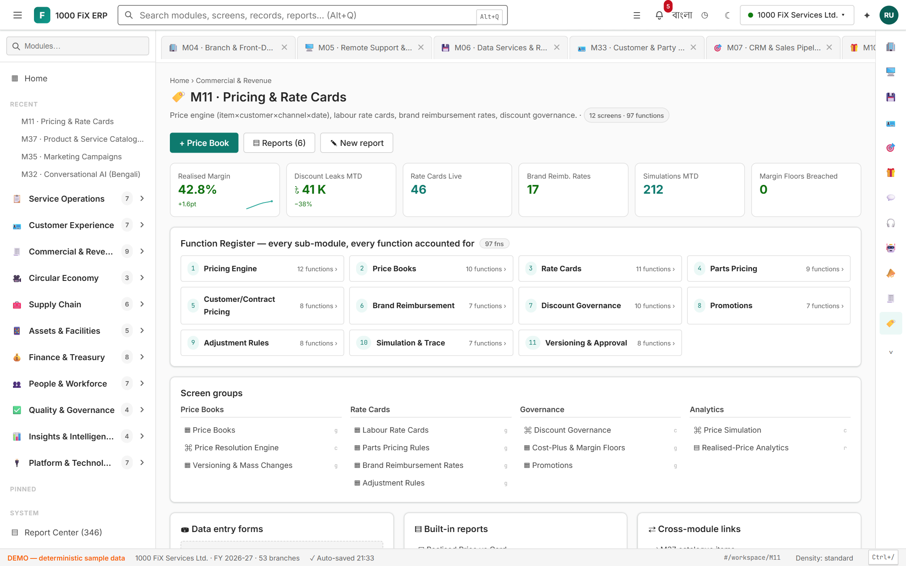
How you use it
- Maintain price books per segment (retail, corporate, government) with effective dates
- Keep technician rate cards (by certification level and hour type)
- Quote with list price; discounts beyond threshold route to the approval flow
- Audit price changes with who/when/why
Business knowledge
Price governance protects both margin and fairness — the same service at the same tier should cost the same in Dhanmondi and Chattogram. Effective-dated books preserve historical invoice accuracy.
What you gain
Frontline staff quote confidently; margin leaks through unapproved discounts stop.
Key screens (12)
| Group | Screen | Type |
|---|---|---|
| Price Books | | |
| ||
| ||
| Rate Cards | | |
| ||
| ||
| ||
| Governance | | |
| ||
| ||
| Analytics | | |
|
Built-in reports (6)
- Realised Price vs Card
- Discount Register by Approver
- Rate-Card Utilisation
- Margin by Service Line
- Promotion Effectiveness
- Brand Reimbursement Recovery
Data-entry forms (5)
- Price Book
- Rate Card
- Discount Policy
- Promotion
- Price Simulation Request
Function register — 97 functions in 11 sub-modules
| # | Sub-module | Functions |
|---|---|---|
| 1 | Pricing Engine | 12 |
| 2 | Price Books | 10 |
| 3 | Rate Cards | 11 |
| 4 | Parts Pricing | 9 |
| 5 | Customer/Contract Pricing | 8 |
| 6 | Brand Reimbursement | 7 |
| 7 | Discount Governance | 10 |
| 8 | Promotions | 7 |
| 9 | Adjustment Rules | 8 |
| 10 | Simulation & Trace | 7 |
| 11 | Versioning & Approval | 8 |
Quotations & Tenders
কোটেশন ও টেন্ডার
Quotations and tender management: structured quotes, revisions, BOQ and tender submission packages.
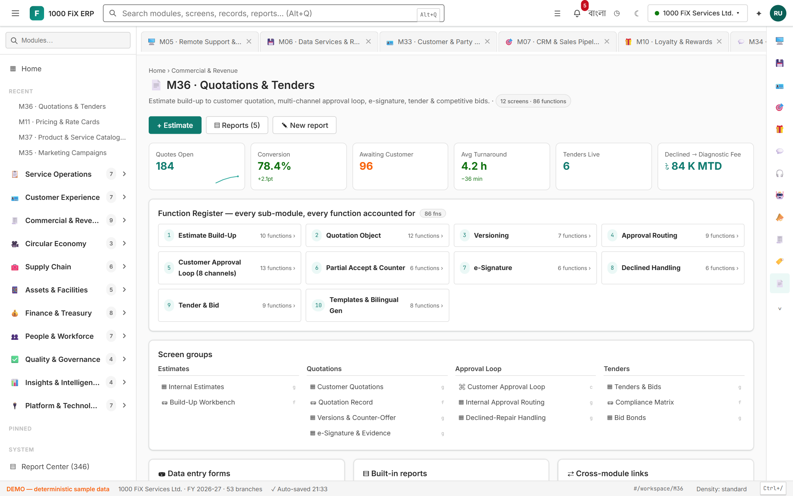
How you use it
- Create a quotation from an opportunity or walk-in; lines pull catalogue prices
- Revise — every version is kept; the customer-facing PDF is versioned
- For tenders: assemble the BOQ, compliance documents and technical response
- Convert a won quote to a contract (M08) or order in one click
Business knowledge
B2B deals are won on response speed and compliance. Version-controlled revisions answer "which price did we send them?" instantly; tender packages mirror government submission formats.
What you gain
Quotes go out in hours with zero re-keying into orders afterwards.
Key screens (12)
| Group | Screen | Type |
|---|---|---|
| Estimates | | |
| ||
| Quotations | | |
| ||
| ||
| ||
| Approval Loop | | |
| ||
| ||
| Tenders | | |
| ||
|
Built-in reports (5)
- Quote Conversion by Channel
- Approval Cycle Time
- Decline Reasons Pareto
- Tender Win/Loss
- Margin on Approved Quotes
Data-entry forms (4)
- Estimate
- Quotation (versioned)
- Tender Bid
- Counter-Offer
Function register — 86 functions in 10 sub-modules
| # | Sub-module | Functions |
|---|---|---|
| 1 | Estimate Build-Up | 10 |
| 2 | Quotation Object | 12 |
| 3 | Versioning | 7 |
| 4 | Approval Routing | 9 |
| 5 | Customer Approval Loop (8 channels) | 13 |
| 6 | Partial Accept & Counter | 6 |
| 7 | e-Signature | 6 |
| 8 | Declined Handling | 6 |
| 9 | Tender & Bid | 9 |
| 10 | Templates & Bilingual Gen | 8 |
Contract Lifecycle (AMC)
চুক্তি ব্যবস্থাপনা
AMC contract lifecycle: templated contracts, entitlements, periodic visit scheduling, renewals and escalations.
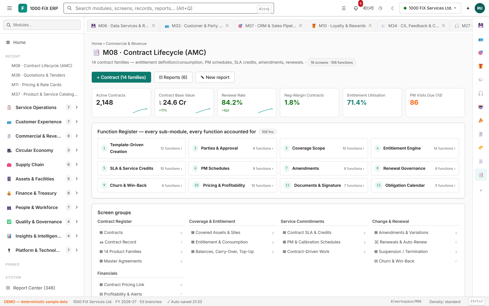
How you use it
- Create an AMC from a template: coverage lines, response SLA, visit entitlements
- The system schedules periodic visits (quarterly PM) automatically
- Entitlement checks at intake validate coverage before free service is promised
- Renewal alerts fire 60/30/7 days before expiry into M07 pipeline
Business knowledge
AMC is recurring revenue with legal obligations: response-time promises and included visits are contractual. Entitlement-at-intake is where AMC value is defended — without it, every covered repair becomes a negotiation.
What you gain
Renewals start months early with facts; covered customers get instant service, uncovered get a quote.
Key screens (16)
| Group | Screen | Type |
|---|---|---|
| Contract Register | | |
| ||
| ||
| ||
| Coverage & Entitlement | | |
| ||
| ||
| Service Commitments | | |
| ||
| ||
| Change & Renewal | | |
| ||
| ||
| ||
| Financials | | |
|
Built-in reports (6)
- Contract Base Movement
- Entitlement Consumption by Client
- SLA Credit Register
- PM Compliance Report
- Renewal Pipeline & Risk
- Contract P&L
Data-entry forms (5)
- Contract (14 families)
- Amendment
- Asset Attach/Detach
- Renewal Quote
- PM Schedule
Function register — 108 functions in 12 sub-modules
| # | Sub-module | Functions |
|---|---|---|
| 1 | Template-Driven Creation | 12 |
| 2 | Parties & Approval | 8 |
| 3 | Coverage Scope | 10 |
| 4 | Entitlement Engine | 14 |
| 5 | SLA & Service Credits | 10 |
| 6 | PM Schedules | 9 |
| 7 | Amendments | 8 |
| 8 | Renewal Governance | 9 |
| 9 | Churn & Win-Back | 6 |
| 10 | Pricing & Profitability | 10 |
| 11 | Documents & Signature | 7 |
| 12 | Obligation Calendar | 5 |
Warranty & Claims
ওয়ারেন্টি ও ক্লেইম
Warranty register and claims: manufacturer warranty validation, 1000 FiX own repair warranty and claim recovery.
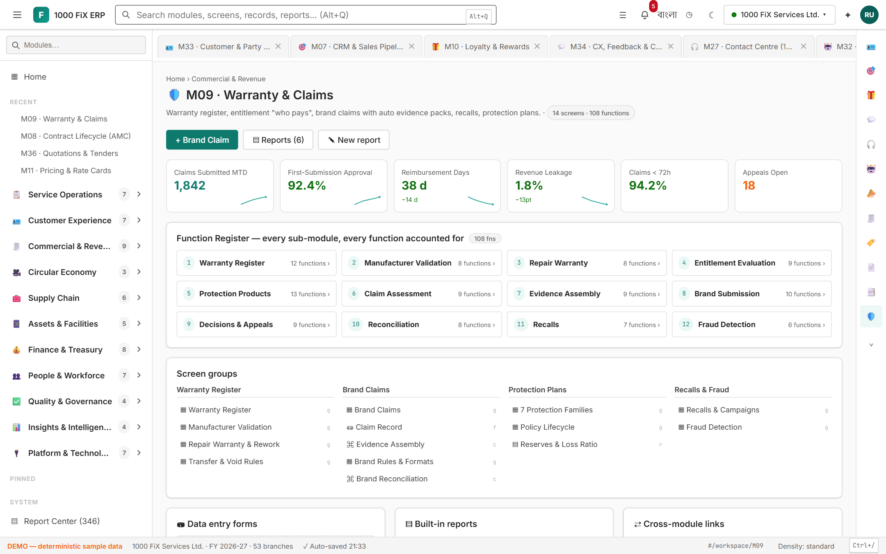
How you use it
- Register devices with warranty terms at sale/intake (labour vs parts, duration)
- Every intake auto-checks warranty status — the order is flagged in/out of warranty
- File claims to manufacturers with evidence packs (diagnosis, parts, photos)
- Track claim recovery: submitted → approved → credited
Business knowledge
Warranty decides who pays. A repair done free for an out-of-warranty device is pure margin loss; an unclaimed manufacturer warranty is money left on the table. Repair warranty (own work, e.g., 90 days) drives repeat-fault accountability.
What you gain
Nobody guesses coverage — the order shows it, and recoverable claims are actually claimed.
Key screens (14)
| Group | Screen | Type |
|---|---|---|
| Warranty Register | | |
| ||
| ||
| ||
| Brand Claims | | |
| ||
| ||
| ||
| ||
| Protection Plans | | |
| ||
| ||
| Recalls & Fraud | | |
|
Built-in reports (6)
- Claim Ageing by Brand
- Reimbursement Cycle Time
- Claim Rejection Analysis
- Evidence Completeness
- Loss Ratio by Product
- Recall Coverage Report
Data-entry forms (4)
- Brand Claim
- Protection Policy
- Claim Appeal
- Recall Campaign
Function register — 108 functions in 12 sub-modules
| # | Sub-module | Functions |
|---|---|---|
| 1 | Warranty Register | 12 |
| 2 | Manufacturer Validation | 8 |
| 3 | Repair Warranty | 8 |
| 4 | Entitlement Evaluation | 9 |
| 5 | Protection Products | 13 |
| 6 | Claim Assessment | 9 |
| 7 | Evidence Assembly | 9 |
| 8 | Brand Submission | 10 |
| 9 | Decisions & Appeals | 9 |
| 10 | Reconciliation | 8 |
| 11 | Recalls | 7 |
| 12 | Fraud Detection | 6 |
Subscriptions & Recurring
সাবস্ক্রিপশন
Subscriptions and recurring billing: subscription objects, schedules, proration, dunning.
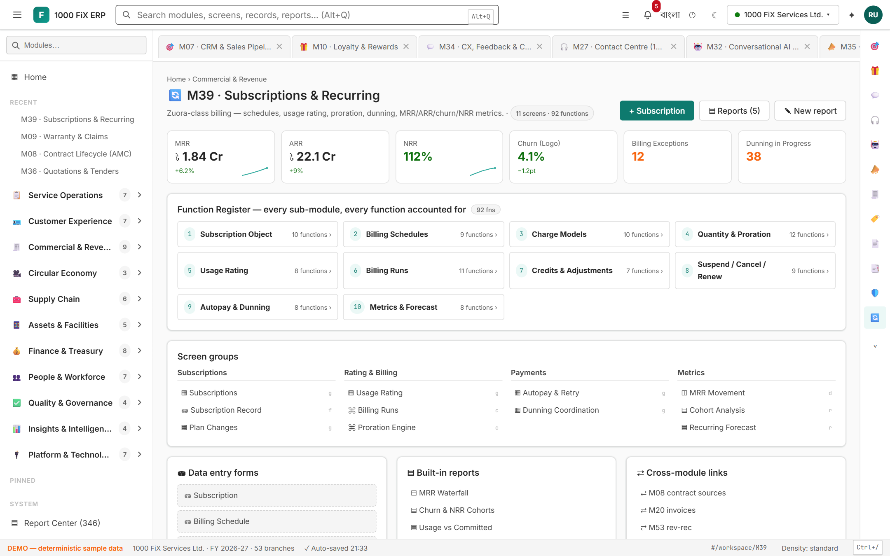
How you use it
- Create a subscription (per device, per user or per site) from the catalogue
- Billing schedules generate automatically — monthly/quarterly, with proration on mid-cycle changes
- Dunning escalates on non-payment (reminder → hold → suspend)
- Recognise revenue monthly via the M53 bridge
Business knowledge
Subscription economics = MRR and churn. Proration fairness (upgrade mid-month) prevents disputes; dunning discipline protects cash without manual chasing.
What you gain
Recurring invoices go out on time and collect themselves; churn is visible per account.
Key screens (11)
| Group | Screen | Type |
|---|---|---|
| Subscriptions | | |
| ||
| ||
| Rating & Billing | | |
| ||
| ||
| Payments | | |
| ||
| Metrics | | |
| ||
|
Built-in reports (5)
- MRR Waterfall
- Churn & NRR Cohorts
- Usage vs Committed
- Billing Exception Log
- Deferred Revenue Bridge
Data-entry forms (4)
- Subscription
- Billing Schedule
- Plan Change
- Dunning Step
Function register — 92 functions in 10 sub-modules
| # | Sub-module | Functions |
|---|---|---|
| 1 | Subscription Object | 10 |
| 2 | Billing Schedules | 9 |
| 3 | Charge Models | 10 |
| 4 | Quantity & Proration | 12 |
| 5 | Usage Rating | 8 |
| 6 | Billing Runs | 11 |
| 7 | Credits & Adjustments | 7 |
| 8 | Suspend / Cancel / Renew | 9 |
| 9 | Autopay & Dunning | 8 |
| 10 | Metrics & Forecast | 8 |
E-Commerce Storefront
ই-কমার্স
The e-commerce storefront: catalogue publishing, cart, online payment and order-to-ERP flow.
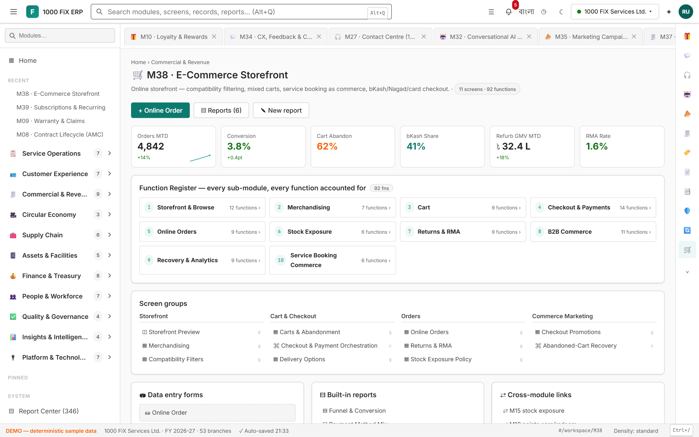
How you use it
- Publish approved catalogue items with photos and web pricing
- Customer orders flow in as prepaid service/product orders with payment status
- Fulfil from branch stock or service scheduling; tracking returns to the customer portal
- Reconcile online payments (cards, bKash/Nagad web) daily
Business knowledge
The storefront is a channel like the hotline — the same order object, the same SLA. Payment-before-fulfilment reduces COD risk that plagues BD e-commerce.
What you gain
Online sales enter the ERP as first-class orders — no spreadsheet bridge.
Key screens (11)
| Group | Screen | Type |
|---|---|---|
| Storefront | | |
| ||
| ||
| Cart & Checkout | | |
| ||
| ||
| Orders | | |
| ||
| ||
| Commerce Marketing | | |
|
Built-in reports (6)
- Funnel & Conversion
- Payment Method Mix
- Refurb GMV by Grade
- Delivery Performance
- RMA & Returns Report
- Abandonment Recovery Rate
Data-entry forms (4)
- Online Order
- RMA Request
- Storefront Slot
- Delivery Slot
Function register — 92 functions in 10 sub-modules
| # | Sub-module | Functions |
|---|---|---|
| 1 | Storefront & Browse | 12 |
| 2 | Merchandising | 7 |
| 3 | Cart | 9 |
| 4 | Checkout & Payments | 14 |
| 5 | Online Orders | 9 |
| 6 | Stock Exposure | 6 |
| 7 | Returns & RMA | 9 |
| 8 | B2B Commerce | 11 |
| 9 | Recovery & Analytics | 9 |
| 10 | Service Booking Commerce | 6 |
Marketplace & Sellers
মার্কেটপ্লেস
Marketplace and seller operations: seller onboarding with KYC, listings, commissions and payouts.
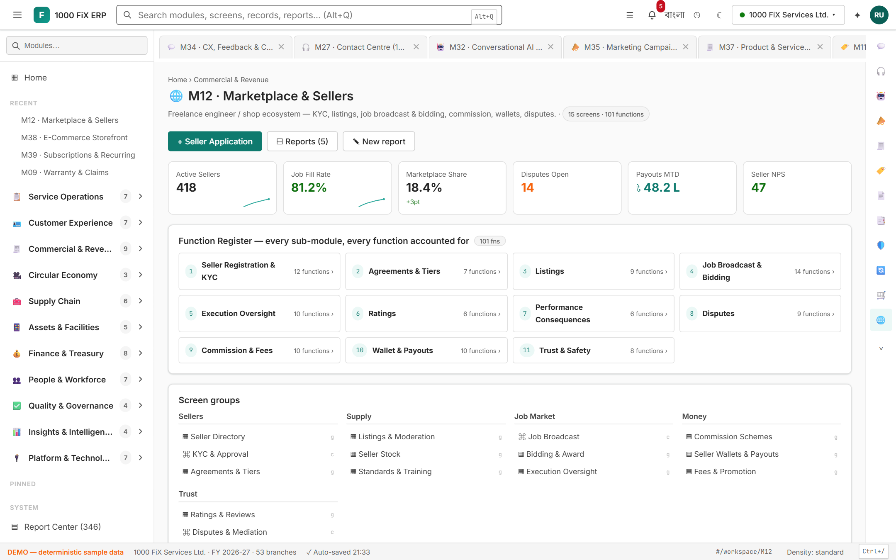
How you use it
- Register sellers with KYC documents and tiered agreements
- Sellers manage listings; category teams approve
- Orders route to sellers with commission rules computed per line
- Payout runs net of commission monthly with statements
Business knowledge
Marketplace is trust infrastructure: KYC (trade licence, BIN) keeps the platform legally clean; transparent commission maths keeps sellers. Payout accuracy is the retention lever.
What you gain
Sellers self-serve; the platform earns commission without manual ledger-keeping.
Key screens (15)
| Group | Screen | Type |
|---|---|---|
| Sellers | | |
| ||
| ||
| Supply | | |
| ||
| ||
| Job Market | | |
| ||
| ||
| Money | | |
| ||
| ||
| Trust | | |
| ||
|
Built-in reports (5)
- Supply-Demand Liquidity
- Fill Rate & Time-to-Accept
- Commission Revenue
- Dispute Rate & Outcomes
- Seller Scorecard Distribution
Data-entry forms (4)
- Seller Application
- Listing
- Payout Run
- Dispute Case
Function register — 101 functions in 11 sub-modules
| # | Sub-module | Functions |
|---|---|---|
| 1 | Seller Registration & KYC | 12 |
| 2 | Agreements & Tiers | 7 |
| 3 | Listings | 9 |
| 4 | Job Broadcast & Bidding | 14 |
| 5 | Execution Oversight | 10 |
| 6 | Ratings | 6 |
| 7 | Performance Consequences | 6 |
| 8 | Disputes | 9 |
| 9 | Commission & Fees | 10 |
| 10 | Wallet & Payouts | 10 |
| 11 | Trust & Safety | 8 |
Partner & Channel
পার্টনার ও চ্যানেল
Partner and channel management: partner master, recruitment, tiering, deal registration and partner portals.
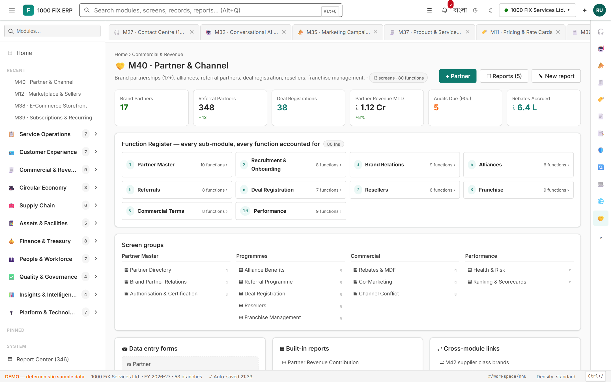
How you use it
- Onboard partners with agreements and tier criteria
- Partners register deals for protection and margin benefits
- Track partner-sourced pipeline and delivered revenue
- Score partners quarterly (revenue, certification, CSAT) for tier moves
Business knowledge
Channel scale = partner economics. Deal registration prevents channel conflict — the killer of partner trust. Certification-linked tiers push partners to train, which protects the brand.
What you gain
Partners sell more because the system protects and rewards their effort fairly.
Key screens (13)
| Group | Screen | Type |
|---|---|---|
| Partner Master | | |
| ||
| ||
| Programmes | | |
| ||
| ||
| ||
| ||
| Commercial | | |
| ||
| ||
| Performance | | |
|
Built-in reports (5)
- Partner Revenue Contribution
- Referral Conversion
- Brand Audit Calendar
- Rebate Accruals
- Channel Conflict Log
Data-entry forms (4)
- Partner
- Deal Registration
- Rebate Scheme
- Franchise Agreement
Function register — 80 functions in 10 sub-modules
| # | Sub-module | Functions |
|---|---|---|
| 1 | Partner Master | 10 |
| 2 | Recruitment & Onboarding | 8 |
| 3 | Brand Relations | 9 |
| 4 | Alliances | 6 |
| 5 | Referrals | 8 |
| 6 | Deal Registration | 7 |
| 7 | Resellers | 6 |
| 8 | Franchise | 9 |
| 9 | Commercial Terms | 8 |
| 10 | Performance | 9 |
A05 — Circular Economy সার্কুলার ইকোনমি
Circular-economy business lines: device rental / Device-as-a-Service, trade-in and refurbishment, and certified e-waste recycling.
The business of this area
Extended producer responsibility and e-waste rules in Bangladesh (Environment Conservation Rules) make certified disposal a compliance issue, not just ethics. Refurbishment margin depends on graded inventory: A/B/C grade devices carry different warranties and prices. Rental fleets live on utilisation rate and damage recovery.
Why it matters to you
- Fleet assets and their revenue contracts are linked — utilisation is visible per device
- Trade-in value, refurb cost and resale margin are captured per unit
- Recycling certificates and chain-of-custody records satisfy auditors
M13 Rental & EaaS · M14 Trade-In & Refurbishment · M18 E-Waste & Recycling
Rental & EaaS
ভাড়া ও ইকুইপমেন্ট
Rental and Equipment-as-a-Service: fleet catalogue, rental agreements, dispatch, returns and damage recovery.
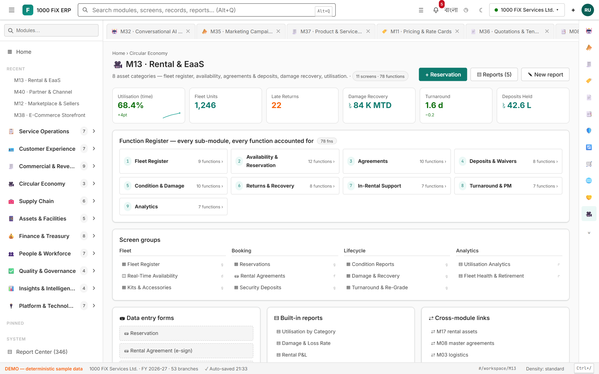
How you use it
- Create a rental agreement with billing cycle and included service
- Prepare and dispatch assets (serialised) with condition reports
- Returns are inspected; damage beyond wear is charged per policy
- Monitor fleet utilisation and idle-asset ageing
Business knowledge
EaaS shifts revenue from sale to subscription — utilisation is the profitability dial. Condition reports at handover are the difference between recoverable damage and write-off.
What you gain
The fleet earns every day it is out and is recovered fast when idle.
Key screens (11)
| Group | Screen | Type |
|---|---|---|
| Fleet | | |
| ||
| ||
| Booking | | |
| ||
| ||
| Lifecycle | | |
| ||
| ||
| Analytics | | |
|
Built-in reports (5)
- Utilisation by Category
- Damage & Loss Rate
- Rental P&L
- Late Return Analysis
- Deposit Reconciliation
Data-entry forms (4)
- Reservation
- Rental Agreement (e-sign)
- Condition Report
- Damage Assessment
Function register — 78 functions in 9 sub-modules
| # | Sub-module | Functions |
|---|---|---|
| 1 | Fleet Register | 9 |
| 2 | Availability & Reservation | 12 |
| 3 | Agreements | 10 |
| 4 | Deposits & Waivers | 8 |
| 5 | Condition & Damage | 10 |
| 6 | Returns & Recovery | 8 |
| 7 | In-Rental Support | 7 |
| 8 | Turnaround & PM | 7 |
| 9 | Analytics | 7 |
Trade-In & Refurbishment
ট্রেড-ইন ও রিফার্বিশ
Trade-in and refurbishment: instant valuations, grading, refurb workflow and certified resale stock.
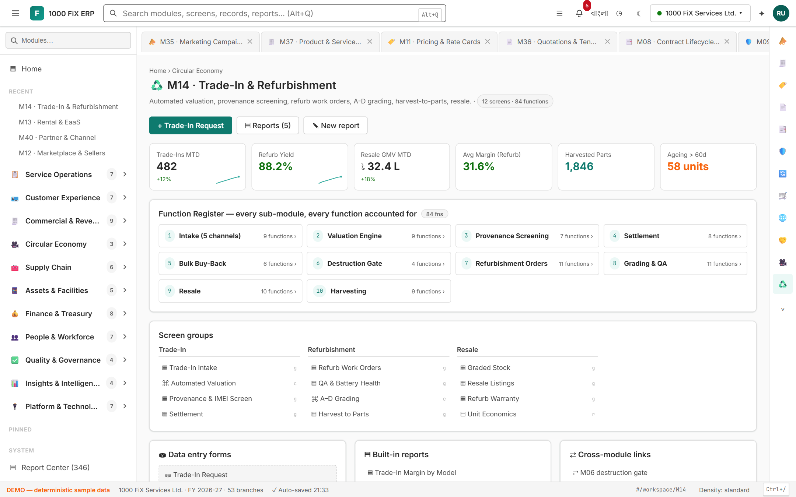
How you use it
- Quote a trade-in value from model/condition rules
- Receive and grade the device (A/B/C) with photo evidence
- Refurbishment orders track parts+labour cost per unit
- Graded stock lists in the resale channel with warranty tiers
Business knowledge
Refurb margin = resale price − (trade-in + refurb cost). Grading integrity is the brand promise of certified refurbished; cost-per-unit visibility stops loss-making trades.
What you gain
Traded devices become profitable certified stock instead of drawer clutter.
Key screens (12)
| Group | Screen | Type |
|---|---|---|
| Trade-In | | |
| ||
| ||
| ||
| Refurbishment | | |
| ||
| ||
| ||
| Resale | | |
| ||
| ||
|
Built-in reports (5)
- Trade-In Margin by Model
- Refurb Cost per Grade
- Ageing & Markdown
- Resale Channel Performance
- Harvest Yield
Data-entry forms (4)
- Trade-In Request
- Valuation Offer
- Refurb Work Order
- Grading Result
Function register — 84 functions in 10 sub-modules
| # | Sub-module | Functions |
|---|---|---|
| 1 | Intake (5 channels) | 9 |
| 2 | Valuation Engine | 9 |
| 3 | Provenance Screening | 7 |
| 4 | Settlement | 8 |
| 5 | Bulk Buy-Back | 6 |
| 6 | Destruction Gate | 4 |
| 7 | Refurbishment Orders | 11 |
| 8 | Grading & QA | 11 |
| 9 | Resale | 10 |
| 10 | Harvesting | 9 |
E-Waste & Recycling
ই-বর্জ্য ও রিসাইক্লিং
E-waste collection and certified recycling: collection network, chain of custody, disposition and certificates.
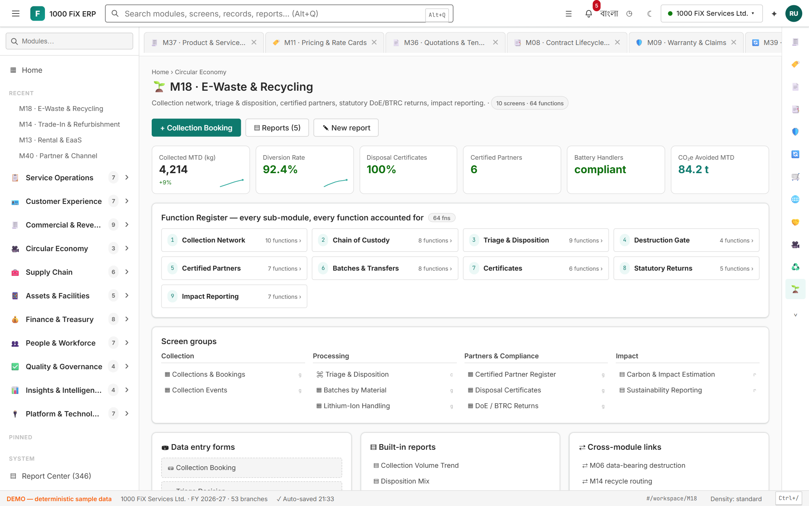
How you use it
- Log collection events (drop-off, corporate pickup)
- Track custody through storage → triage → disposition
- Record disposition per category (reuse/recycle/destroy) with weights
- Issue certificates to corporate donors and file regulator returns
Business knowledge
E-waste is regulated: corporate donors increasingly require certified destruction and recycling proof. Weights and dispositions summarise into compliance reporting.
What you gain
Compliance revenue (corporate e-waste contracts) grows with zero audit anxiety.
Key screens (10)
| Group | Screen | Type |
|---|---|---|
| Collection | | |
| ||
| Processing | | |
| ||
| ||
| Partners & Compliance | | |
| ||
| ||
| Impact | | |
|
Built-in reports (5)
- Collection Volume Trend
- Disposition Mix
- Material Recovery
- Compliance Evidence Pack
- Impact & Diversion Report
Data-entry forms (4)
- Collection Booking
- Triage Decision
- Batch Transfer Note
- Disposal Record
Function register — 64 functions in 9 sub-modules
| # | Sub-module | Functions |
|---|---|---|
| 1 | Collection Network | 10 |
| 2 | Chain of Custody | 8 |
| 3 | Triage & Disposition | 9 |
| 4 | Destruction Gate | 4 |
| 5 | Certified Partners | 7 |
| 6 | Batches & Transfers | 8 |
| 7 | Certificates | 6 |
| 8 | Statutory Returns | 5 |
| 9 | Impact Reporting | 7 |
A06 — Supply Chain সরবরাহ শৃঙ্খল
Spare parts and materials: inventory across branches and central warehouse, procurement, suppliers, demand planning and import compliance.
The business of this area
Parts availability is the #1 cause of failed first-time fixes. Critical spares carry min/max levels and reorder points; slow movers tie up working capital. Import compliance in Bangladesh means LC (letter of credit) terms, HS codes, customs assessment and VAT on imports — errors here strand shipments for weeks.
Why it matters to you
- Stock visible across all branches in real time — no more "call the warehouse"
- Reorder alerts fire before a critical part stocks out
- Landed cost including duty and freight rolls into part cost automatically
M15 Spare Parts & Inventory · M41 Warehouse Management · M16 Procurement & Sourcing · M42 Supplier Relationship · M43 Demand Planning · M44 Import & Trade Compliance
Spare Parts & Inventory
স্পেয়ার পার্টস ও ইনভেন্টরি
Spare-parts inventory: on-hand by branch, classes (ABC), reservations, cycle counts and reorder alerts.
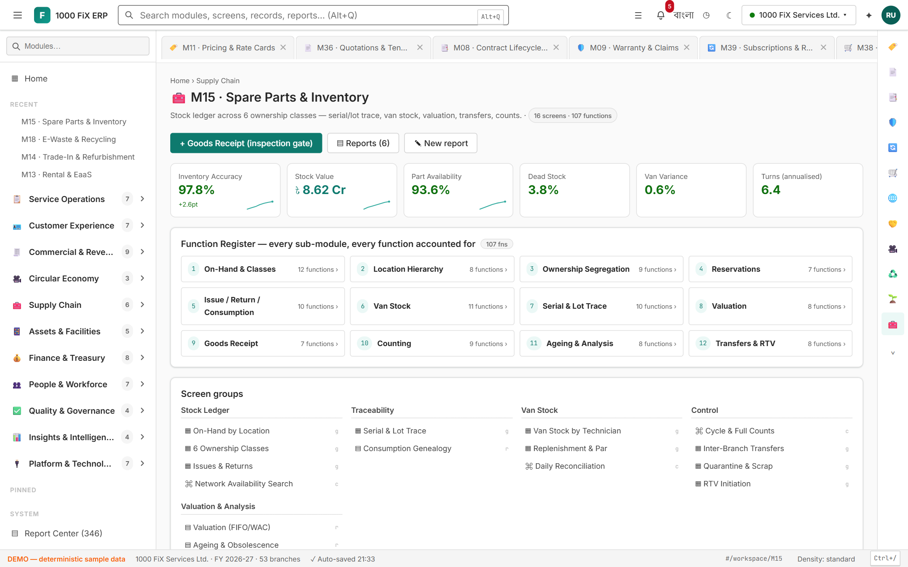
How you use it
- Check availability across branches on the parts grid before promising a repair date
- Reserve parts against a work order at estimate approval
- Perform cycle counts (bin-level) — variances need reasons
- Reorder points trigger purchase requests automatically
Business knowledge
ABC classification focuses counting effort where the money is. Reservation at approval is why a promised Friday delivery survives a Thursday rush.
What you gain
Techs fix same-day because the part was there — and finance knows exactly what stock is worth.
Key screens (16)
| Group | Screen | Type |
|---|---|---|
| Stock Ledger | | |
| ||
| ||
| ||
| Traceability | | |
| ||
| Van Stock | | |
| ||
| ||
| Control | | |
| ||
| ||
| ||
| Valuation & Analysis | | |
| ||
|
Built-in reports (6)
- Stock Valuation by Class
- Inventory Accuracy Audit
- Ageing & Dead Stock
- Van Stock Variance
- Transfer Performance
- ABC Segmentation
Data-entry forms (5)
- Goods Receipt (inspection gate)
- Stock Issue
- Transfer Request
- Cycle Count
- Scrap Order
Function register — 107 functions in 12 sub-modules
| # | Sub-module | Functions |
|---|---|---|
| 1 | On-Hand & Classes | 12 |
| 2 | Location Hierarchy | 8 |
| 3 | Ownership Segregation | 9 |
| 4 | Reservations | 7 |
| 5 | Issue / Return / Consumption | 10 |
| 6 | Van Stock | 11 |
| 7 | Serial & Lot Trace | 10 |
| 8 | Valuation | 8 |
| 9 | Goods Receipt | 7 |
| 10 | Counting | 9 |
| 11 | Ageing & Analysis | 8 |
| 12 | Transfers & RTV | 8 |
Warehouse Management
ওয়্যারহাউস ব্যবস্থাপনা
Warehouse management: receiving, put-away, picking, packing and warehouse transfers with bin locations.
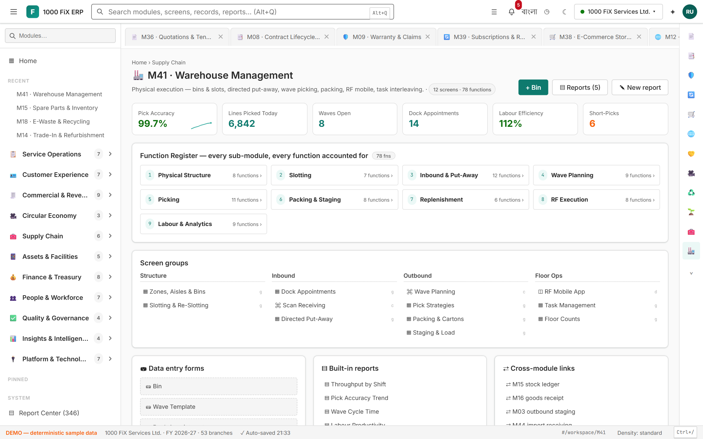
How you use it
- Receive against a purchase or transfer order — GRN with inspection status
- Put-away to bins follows system-directed suggestions
- Pick waves for branch replenishment and workshop demand
- Trace every movement in the bin history
Business knowledge
Bin-level discipline converts "the part exists somewhere" into "the part is in A-12-3". Traceability supports both audit and recall scenarios.
What you gain
Warehouse staff find things first time; stock accuracy stays above 98%.
Key screens (12)
| Group | Screen | Type |
|---|---|---|
| Structure | | |
| ||
| Inbound | | |
| ||
| ||
| Outbound | | |
| ||
| ||
| ||
| Floor Ops | | |
| ||
|
Built-in reports (5)
- Throughput by Shift
- Pick Accuracy Trend
- Wave Cycle Time
- Labour Productivity
- Bin Utilisation Heatmap
Data-entry forms (4)
- Bin
- Wave Template
- Dock Appointment
- Packing Station Config
Function register — 78 functions in 9 sub-modules
| # | Sub-module | Functions |
|---|---|---|
| 1 | Physical Structure | 8 |
| 2 | Slotting | 7 |
| 3 | Inbound & Put-Away | 12 |
| 4 | Wave Planning | 9 |
| 5 | Picking | 11 |
| 6 | Packing & Staging | 8 |
| 7 | Replenishment | 6 |
| 8 | RF Execution | 8 |
| 9 | Labour & Analytics | 9 |
Procurement & Sourcing
ক্রয় ও সোর্সিং
Procurement and sourcing: purchase requisitions, RFQs, purchase orders, goods receipt and invoice matching.
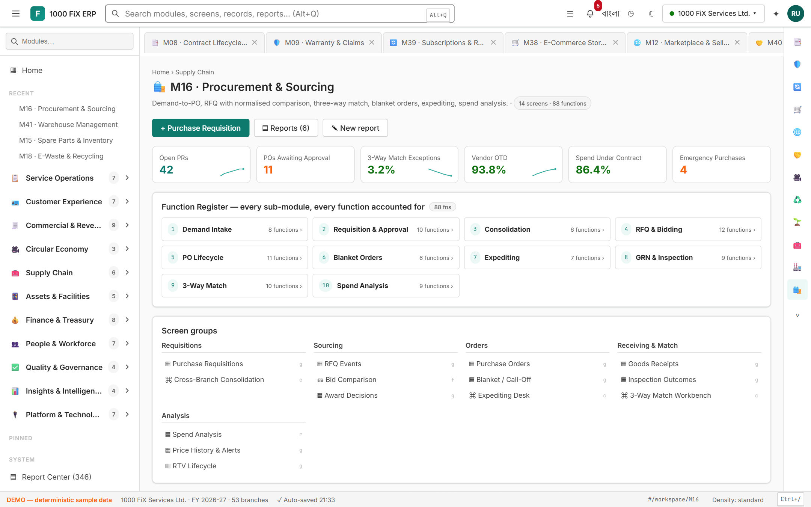
How you use it
- Raise a purchase requisition (auto from reorder or manual) with approvals
- Run RFQs to shortlisted suppliers; compare and award
- Issue the PO with delivery terms
- Three-way match: PO ↔ GRN ↔ invoice before payment
Business knowledge
The three-way match is the anti-fraud backbone of procurement — pay only for what was ordered and received. RFQ discipline keeps supplier pricing honest.
What you gain
Buying is transparent and matched; duplicate or short-paid invoices become impossible.
Key screens (14)
| Group | Screen | Type |
|---|---|---|
| Requisitions | | |
| ||
| Sourcing | | |
| ||
| ||
| Orders | | |
| ||
| ||
| Receiving & Match | | |
| ||
| ||
| Analysis | | |
| ||
|
Built-in reports (6)
- Spend by Category & Vendor
- Match Exception Pareto
- OTD by Vendor
- Price Variance Alert
- Maverick Spend
- PO Cycle Time
Data-entry forms (5)
- Purchase Requisition
- RFQ
- Purchase Order
- GRN
- RTV Request
Function register — 88 functions in 10 sub-modules
| # | Sub-module | Functions |
|---|---|---|
| 1 | Demand Intake | 8 |
| 2 | Requisition & Approval | 10 |
| 3 | Consolidation | 6 |
| 4 | RFQ & Bidding | 12 |
| 5 | PO Lifecycle | 11 |
| 6 | Blanket Orders | 6 |
| 7 | Expediting | 7 |
| 8 | GRN & Inspection | 9 |
| 9 | 3-Way Match | 10 |
| 10 | Spend Analysis | 9 |
Supplier Relationship
সরবরাহকারী সম্পর্ক
Supplier relationship: profiles, segmentation, qualification/audits, scorecards and compliance documents.
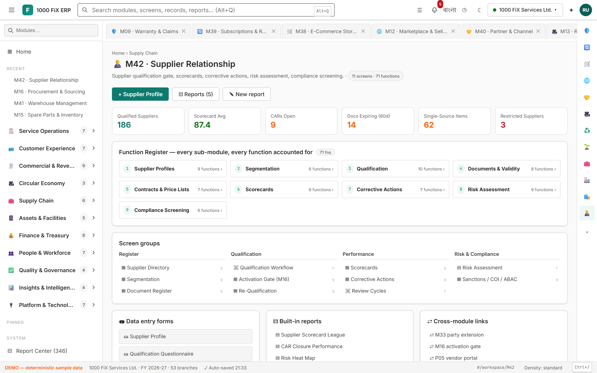
How you use it
- Maintain supplier profiles with trade licence, BIN, bank and contacts
- Track qualification status and audit findings before awarding
- Scorecards compute monthly: OTIF delivery, quality rejects, price variance
- Review the supplier council pack quarterly
Business knowledge
A single dodgy parts supplier destroys first-time-fix. Scorecards turn vendor conversations from opinion into data; document expiry alerts prevent buying from lapsed licences.
What you gain
Better suppliers win, weak ones improve or exit — parts reliability rises every quarter.
Key screens (11)
| Group | Screen | Type |
|---|---|---|
| Register | | |
| ||
| ||
| Qualification | | |
| ||
| ||
| Performance | | |
| ||
| ||
| Risk & Compliance | | |
|
Built-in reports (5)
- Supplier Scorecard League
- CAR Closure Performance
- Risk Heat Map
- Contract Coverage
- Compliance Screening Log
Data-entry forms (4)
- Supplier Profile
- Qualification Questionnaire
- CAR
- Risk Assessment
Function register — 71 functions in 9 sub-modules
| # | Sub-module | Functions |
|---|---|---|
| 1 | Supplier Profiles | 9 |
| 2 | Segmentation | 6 |
| 3 | Qualification | 10 |
| 4 | Documents & Validity | 8 |
| 5 | Contracts & Price Lists | 7 |
| 6 | Scorecards | 9 |
| 7 | Corrective Actions | 7 |
| 8 | Risk Assessment | 9 |
| 9 | Compliance Screening | 6 |
Demand Planning
চাহিদা পরিকল্পনা
Demand planning: forecasts for parts and services, seasonality, safety stock and plan-vs-actual.
How you use it
- Review the statistical forecast (history + seasonality) per part/service
- Adjust with market intelligence (new model launches, monsoon patterns)
- Generate the supply plan and safety-stock proposals
- Track forecast accuracy (MAPE) monthly
Business knowledge
Monsoon spikes, Eid surges and new device launches are predictable — planning converts panic buying into scheduled procurement. Forecast accuracy itself is measured so the planner improves.
What you gain
Right stock, right time, less working capital sitting on shelves.
Key screens (10)
| Group | Screen | Type |
|---|---|---|
| Forecasting | | |
| ||
| ||
| Policies | | |
| ||
| ||
| Execution | | |
| ||
| ||
| Simulation | |
Built-in reports (5)
- Forecast Accuracy by Class
- Stockout Root Causes
- Excess & Obsolescence Exposure
- Rebalancing Savings
- New-Part Introduction
Data-entry forms (3)
- Review Cycle
- Policy Assignment
- Rebalance Proposal
Function register — 58 functions in 9 sub-modules
| # | Sub-module | Functions |
|---|---|---|
| 1 | History & Cleansing | 7 |
| 2 | Segmentation | 6 |
| 3 | Forecast Orchestration | 8 |
| 4 | Accuracy Tracking | 6 |
| 5 | Safety Stock & ROP | 9 |
| 6 | Lead-Time | 5 |
| 7 | Planned Orders | 6 |
| 8 | Multi-Echelon Rebalancing | 7 |
| 9 | What-If | 4 |
Import & Trade Compliance
আমদানি ও বাণিজ্য
Import and trade compliance: LC management, HS classification, customs documentation and duty calculation.
How you use it
- Open an import file with LC details and supplier invoice
- Classify lines with HS codes; compute duty/VAT payable
- Track customs assessment, clearance and release
- Landed costs post to inventory value
Business knowledge
Import errors cost weeks: wrong HS code = mis-assessment = demurrage. LC terms and amendment tracking keep bank and supplier aligned. Duty + AIT + VAT-at-import roll into landed cost.
What you gain
Shipments clear fast and parts carry their true cost — no month-end duty surprises.
Key screens (13)
| Group | Screen | Type |
|---|---|---|
| Orders & Finance | | |
| ||
| ||
| ||
| Compliance | | |
| ||
| ||
| Shipping & Customs | | |
| ||
| ||
| ||
| Costing | | |
|
Built-in reports (5)
- Landed Cost by Shipment
- Duty & Tax Cascade
- Cycle-Time Analysis
- Demurrage Avoidance
- FX Exposure
Data-entry forms (4)
- Import Order
- LC Application
- HS Ruling Request
- Bill of Entry
Function register — 64 functions in 8 sub-modules
| # | Sub-module | Functions |
|---|---|---|
| 1 | Import Order Lifecycle | 9 |
| 2 | LC & Payments | 10 |
| 3 | HS Classification | 7 |
| 4 | Eligibility & IRC | 5 |
| 5 | Shipping & Insurance | 8 |
| 6 | Port & Customs | 9 |
| 7 | Duty Computation | 8 |
| 8 | Landed Cost | 8 |
A07 — Assets & Facilities সম্পদ ও সুবিধা
The physical backbone: customer device registry, company assets and test equipment, fleet, branch infrastructure and IoT telemetry.
The business of this area
Serialised tracking means each device is an individual record with warranty, repair history and owner — the basis of every "when was it bought?" answer. Test equipment itself needs calibration cycles for ISO 17025-style credibility. Fleet maintenance and branch facility upkeep (generators, UPS, HVAC) keep service delivery running.
Why it matters to you
- Any device’s full history in two clicks — intake, repairs, parts, owner
- Calibration and maintenance due dates for test gear never slip
- Predictive telemetry turns break-fix into planned maintenance
M17 Device & Asset Registry · M45 Enterprise Assets & Test Equipment · M46 Fleet & Vehicles · M47 Facility & Branch Infrastructure · M48 IoT Telemetry & Predictive
Device & Asset Registry
ডিভাইস রেজিস্ট্রি
The customer device registry: serialised devices, ownership, warranty and full service history.
How you use it
- Register devices at sale or first intake (IMEI/serial, model, purchase proof)
- Every service order links to the device record — history builds automatically
- Look up any device by IMEI/serial from Tell-ME — owner, warranty, past repairs, trade-in status
- Flag devices: stolen-list, do-not-service, recalled
Business knowledge
Serialised registry is what makes warranty, trade-in and theft checks instant. "Do-not-service" flags protect against servicing stolen devices — a real BD market problem.
What you gain
Two clicks answer the eternal question: whose device is this and what has been done to it?
Key screens (14)
| Group | Screen | Type |
|---|---|---|
| Registry | | |
| ||
| ||
| ||
| ||
| History | | |
| ||
| ||
| Custody | | |
| ||
| Corporate Estates | | |
| ||
| Coverage | | |
|
Built-in reports (5)
- Installed Base by Brand/Model
- Repeat-Fault Pareto
- Estate Coverage by Client
- Custody Exceptions
- Data Quality Scorecard
Data-entry forms (4)
- Asset (6 identifiers)
- Estate Assignment
- Ownership Transfer
- Condition Grading
Function register — 96 functions in 11 sub-modules
| # | Sub-module | Functions |
|---|---|---|
| 1 | Identity & Resolution | 14 |
| 2 | Configuration & Components | 8 |
| 3 | Ownership & Custody | 12 |
| 4 | Service History | 9 |
| 5 | Parts Genealogy | 7 |
| 6 | Repeat-Fault Detection | 6 |
| 7 | Warranty Projection | 7 |
| 8 | Corporate Estates | 12 |
| 9 | Bulk Registration | 7 |
| 10 | Condition & EOL Routing | 8 |
| 11 | Data Quality | 6 |
Enterprise Assets & Test Equipment
এন্টারপ্রাইজ সম্পদ
Company assets and test equipment: asset register, maintenance/calibration schedules and downtime tracking.
How you use it
- Maintain the asset register with custodian and location
- Calibration schedules alert before due dates; results are recorded as pass/fail
- Breakdowns log downtime and root cause
- Depreciation flows to M49
Business knowledge
Test gear out of calibration invalidates the QC step built on it — scheduling is a quality control, not admin. Downtime tracking justifies replacement decisions with data.
What you gain
Equipment is always inspection-ready; auditors find calibration certificates instantly.
Key screens (12)
| Group | Screen | Type |
|---|---|---|
| Register | | |
| ||
| ||
| Custody | | |
| ||
| ||
| Calibration | | |
| ||
| ||
| ||
| Maintenance | | |
|
Built-in reports (4)
- Calibration Compliance Report
- Equipment Utilisation
- Tool Loss & Write-Off
- Cost of Ownership
Data-entry forms (4)
- Equipment
- Calibration Record
- Issue/Return
- Write-Off
Function register — 64 functions in 7 sub-modules
| # | Sub-module | Functions |
|---|---|---|
| 1 | Register & Classification | 10 |
| 2 | Issue / Custody / Transfer | 11 |
| 3 | Kit Management | 6 |
| 4 | Calibration Management | 16 |
| 5 | PM & Repair | 8 |
| 6 | Usage Capture | 6 |
| 7 | Verification & Loss | 7 |
Fleet & Vehicles
ফ্লিট ও যানবাহন
Fleet and vehicles: vehicle register, trips, fuel, maintenance and driver compliance.
How you use it
- Maintain vehicles with documents (fitness, insurance, tax token) and expiry alerts
- Log trips against work orders — distance and purpose
- Fuel logs reconcile against distance (mileage outlier flags)
- Service and repair schedules per vehicle
Business knowledge
Field-service fuel is a top controllable cost; mileage anomalies expose both leakage and driving behaviour. Document expiry alerts keep vehicles legally on the road.
What you gain
The fleet runs legally and cheaply, with costs attributed to the jobs it served.
Key screens (12)
| Group | Screen | Type |
|---|---|---|
| Register | | |
| ||
| ||
| Statutory | | |
| ||
| Operations | | |
| ||
| ||
| ||
| Safety & Cost | | |
| ||
|
Built-in reports (5)
- Fleet Availability
- Fuel Efficiency Trend
- Maintenance Cost per Vehicle
- Statutory Compliance Register
- Incident Summary
Data-entry forms (5)
- Vehicle
- Driver
- Fuel Transaction
- Accident Report
- PM Service
Function register — 62 functions in 8 sub-modules
| # | Sub-module | Functions |
|---|---|---|
| 1 | Vehicle Register | 8 |
| 2 | Statutory Documents | 9 |
| 3 | Drivers | 8 |
| 4 | Assignment & Pool | 6 |
| 5 | Pre-Use & PM | 9 |
| 6 | Fuel & Odometer | 8 |
| 7 | Telematics | 5 |
| 8 | Accidents & Insurance | 9 |
Facility & Branch Infrastructure
সুবিধা ও শাখা
Facility and branch infrastructure: sites, leases, utilities, AMCs for building systems and maintenance tickets.
How you use it
- Each branch is a site record with lease terms and rent schedule
- Building systems (generator, UPS, HVAC, security) carry their own maintenance plans
- Facility tickets (broken AC, power issue) route to the right vendor/internal team
- Statutory compliance items (fire safety) track certificates
Business knowledge
Branch uptime is service uptime — a branch without power serves nobody. Lease and utilities data feed the true cost-per-branch in FP&A.
What you gain
Buildings are managed like assets: planned upkeep, no surprise expiries.
Key screens (12)
| Group | Screen | Type |
|---|---|---|
| Sites | | |
| ||
| Leases | | |
| ||
| Compliance | | |
| ||
| Infrastructure | | |
| ||
| ||
| Safety | | |
| ||
|
Built-in reports (5)
- Cost per Site / per Job
- Lease Expiry Register
- Licence Compliance
- Utilities Variance
- Facility Work Order Performance
Data-entry forms (5)
- Site
- Lease
- Licence
- Facility Work Order
- Safety Inspection
Function register — 71 functions in 9 sub-modules
| # | Sub-module | Functions |
|---|---|---|
| 1 | Site Register | 7 |
| 2 | Lease Administration | 11 |
| 3 | Statutory Compliance | 9 |
| 4 | Utilities | 6 |
| 5 | Infrastructure Assets | 9 |
| 6 | Building PM | 7 |
| 7 | Work Orders | 6 |
| 8 | Safety & Security | 10 |
| 9 | Open / Close Projects | 6 |
IoT Telemetry & Predictive
আইওটি ও পূর্বাভাস
IoT telemetry and predictive maintenance: stream registry, sensor ingestion, health rules and predictions.
How you use it
- Onboard telemetry streams (fleet trackers, UPS sensors, customer devices with consent)
- Rules engine watches thresholds (temperature, battery health, vibration)
- Breaches raise predictive work orders before failure
- Dashboards show estate health and avoided failures
Business knowledge
Predictive maintenance flips cost from breakdown (overtime, expediting, angry customer) to planned visit. Consent and purpose-limitation on telemetry keep data-protection posture clean.
What you gain
Fix it before it breaks — fewer emergencies, better margin.
Key screens (10)
| Group | Screen | Type |
|---|---|---|
| Ingestion | | |
| ||
| ||
| Alerting | | |
| ||
| Intelligence | | |
| ||
| ||
| ||
| Governance | |
Built-in reports (4)
- Telemetry Coverage
- Alert Storm Analysis
- Prediction Outcome Tracking
- Stream Quality Report
Data-entry forms (3)
- Stream Binding
- Alert Rule
- Downsampling Policy
Function register — 51 functions in 7 sub-modules
| # | Sub-module | Functions |
|---|---|---|
| 1 | Stream Registry & Onboarding | 8 |
| 2 | Protocol Adapters | 7 |
| 3 | Ingestion & Storage | 9 |
| 4 | Threshold Alerting | 8 |
| 5 | Health Scoring | 6 |
| 6 | Failure Prediction | 7 |
| 7 | Prescriptive Routing | 6 |
A08 — Finance & Treasury অর্থ ও কোষাগার
Money: general ledger, receivables and invoicing, payables and expenses, treasury and banking, Bangladesh tax, revenue recognition, fixed assets and FP&A.
The business of this area
In Bangladesh every taxable supply needs a Mushak 6.3 tax invoice and the month’s VAT position is filed as a Mushak 9.1 return to NBR. Payments ride mobile financial services — bKash and Nagad — alongside cards and bank transfers; each rail reconciles differently. Revenue for AMC contracts is earned monthly even though cash arrives yearly — that is revenue recognition.
Why it matters to you
- One invoice per job, with VAT computed by rule — not by calculator
- Bank, bKash and Nagad statements reconcile daily
- Month-end close is a checklist, not a fire drill
M19 Financial Accounting & GL · M20 AR, Invoicing & Collections · M52 AP & Employee Expense · M50 Treasury & Banking · M51 Tax & Regulatory (BD) · M53 Revenue Recognition & Settlement · M49 Fixed Assets & Capex · M54 Costing, Budget & FP&A
Financial Accounting & GL
আর্থিক হিসাব
The general ledger and financial accounting core: chart of accounts, journals, subledgers and period close.
How you use it
- Journals post from subledgers (sales, purchases, payroll) — manual journals are the exception
- Review unposted/rejected journals in the close checklist
- Trial balance and financial statements by entity and period
- Period-end: close checklist gates the lock
Business knowledge
One COA with dimensions (branch, service line, project) powers every report downstream. The subledger-posting model means operations never touch GL directly — auditability by design.
What you gain
Books are always reconcileable; closing is a routine, not an archaeology project.
Key screens (14)
| Group | Screen | Type |
|---|---|---|
| Ledger | | |
| ||
| ||
| ||
| ||
| Close | | |
| ||
| Statements | | |
| ||
| ||
| ||
| Controls | | |
| ||
|
Built-in reports (6)
- Trial Balance
- P&L (BFRS)
- Balance Sheet
- Cash Flow
- Dimensional P&L by Branch
- Close Checklist Report
Data-entry forms (3)
- Journal Entry (manual/recurring)
- Allocation Rule
- Intercompany Charge
Function register — 91 functions in 10 sub-modules
| # | Sub-module | Functions |
|---|---|---|
| 1 | CoA & Dimensions | 12 |
| 2 | Journals | 11 |
| 3 | Subledger Posting Engine | 12 |
| 4 | Fiscal Calendar & Close | 10 |
| 5 | Multi-Entity & Consolidation | 9 |
| 6 | Multi-Currency | 7 |
| 7 | Statutory Statements | 9 |
| 8 | Audit & Retention | 7 |
| 9 | Accrual Framework | 8 |
| 10 | Controls & SoD | 6 |
AR, Invoicing & Collections
প্রাপ্য ও ইনভয়েসিং
Receivables: invoicing with Mushak 6.3, collections, dunning, credit control and receipts.
How you use it
- Invoices assemble from completed orders/contracts — Mushak 6.3 renders automatically
- Receipts match to invoices (bank, bKash, Nagad, cash) via the cash desk or bank feed
- Dunning escalates by aging bucket
- Credit holds stop new orders for overdue B2B accounts
Business knowledge
In Bangladesh every taxable supply must carry a Mushak 6.3 tax invoice; errors invite VAT audit pain. Mobile-wallet reconciliation (bKash/Nagad settlement files) is a daily control.
What you gain
Invoices are right the first time; cash is matched the day it lands.
Key screens (15)
| Group | Screen | Type |
|---|---|---|
| Invoicing | | |
| ||
| ||
| ||
| ||
| Receipts | | |
| ||
| ||
| Credit Control | | |
| ||
| ||
| ||
| Analysis | | |
| ||
|
Built-in reports (6)
- AR Ageing by Segment
- Dunning Effectiveness
- Payment Method Mix
- Invoice Accuracy
- Brand Receivable Ageing
- Collections Productivity
Data-entry forms (5)
- Invoice Request
- Receipt
- Credit Note
- Refund
- Payment Link
Function register — 99 functions in 10 sub-modules
| # | Sub-module | Functions |
|---|---|---|
| 1 | Billable-Event Intake | 12 |
| 2 | Invoice Assembly | 12 |
| 3 | Mushak 6.3 Rendering | 8 |
| 4 | Delivery Channels | 6 |
| 5 | Receipt Capture (8 methods) | 14 |
| 6 | Matching & Allocation | 11 |
| 7 | Credit Control | 9 |
| 8 | Dunning & Collections | 12 |
| 9 | Credit Notes & Refunds | 8 |
| 10 | Leakage Detection | 7 |
AP & Employee Expense
প্রদেয় ও ব্যয়
Payables and employee expenses: supplier invoices, payment proposals, employee claims and reimbursements.
How you use it
- Supplier invoices enter the three-way match queue
- Approved invoices flow to weekly payment proposals (due-date ordered)
- Employees submit expense claims with receipts attached — policy checks flag limits
- Reimbursements pay with payroll or bank run
Business knowledge
Paying on due dates (not early, not late) is free working capital. Policy-automated expense checks end receipt-packet theatre.
What you gain
Suppliers are paid exactly on time; staff are reimbursed without chasing.
Key screens (12)
| Group | Screen | Type |
|---|---|---|
| Vendor Payables | | |
| ||
| ||
| Payments | | |
| ||
| ||
| Employee Expense | | |
| ||
| ||
| ||
| Analysis | | |
|
Built-in reports (6)
- AP Ageing
- TDS Deduction Register
- Payment Run Summary
- Expense by Category
- GRNI Reconciliation
- Duplicate Prevention Log
Data-entry forms (4)
- Vendor Bill
- Expense Claim
- Employee Advance
- Debit Note
Function register — 82 functions in 9 sub-modules
| # | Sub-module | Functions |
|---|---|---|
| 1 | Invoice Capture | 10 |
| 2 | Matching | 11 |
| 3 | Approval | 8 |
| 4 | Payable Ledger | 8 |
| 5 | Payment Runs | 9 |
| 6 | TDS/VDS | 9 |
| 7 | Employee Expenses | 14 |
| 8 | Advances & Cards | 8 |
| 9 | GRNI | 5 |
Treasury & Banking
কোষাগার ও ব্যাংক
Treasury and banking: bank accounts, transfers, reconciliations, petty cash and payment-rail operations.
How you use it
- Daily bank/wallet statement import → auto-match to receipts/payments
- Unmatched items queue for treasury with aging
- Fund transfers between accounts carry approval trails
- Petty cash at branches counts via M04 declarations
Business knowledge
Daily reconciliation is the strongest anti-fraud control in cash-heavy BD operations — differences surface in 24 hours, not at audit. Wallet settlement timing (bKash T+1) is managed as liquidity.
What you gain
Every taka is accounted for daily; treasury knows today’s true position.
Key screens (15)
| Group | Screen | Type |
|---|---|---|
| Cash | | |
| ||
| ||
| ||
| Banking | | |
| ||
| ||
| Execution | | |
| ||
| ||
| Settlement | | |
| ||
| Planning | | |
| ||
|
Built-in reports (6)
- Daily Cash Position
- Bank Reconciliation Summary
- Gateway Settlement Reconciliation
- COD Settlement Report
- 13-Week Cash Forecast
- Bank Charges Analysis
Data-entry forms (4)
- Bank Statement Import
- Payment Instruction
- Cash Deposit
- Imprest Top-Up
Function register — 88 functions in 9 sub-modules
| # | Sub-module | Functions |
|---|---|---|
| 1 | Bank Masters | 7 |
| 2 | Statement & Recon | 13 |
| 3 | Cash Position & Consolidation | 12 |
| 4 | Payment Execution | 13 |
| 5 | Gateway/MFS Settlement | 11 |
| 6 | Forecasting | 8 |
| 7 | Facilities & Trade Finance | 12 |
| 8 | FX | 5 |
| 9 | Controls | 7 |
Tax & Regulatory (BD)
কর ও ভ্যাট
Bangladesh tax and regulatory: VAT determination (15% standard, specials), Mushak registers, withholding and returns.
How you use it
- VAT determination runs at invoice line level — standard/reduced/exempt by item and customer type
- Mushak 6.3 (sales challan) and purchase VAT registers build continuously
- Withholding VAT/AIT on supplier and rent payments computes at payment
- Month-end: the Mushak 9.1 return draft assembles output-vs-input VAT with working papers
Business knowledge
Under the VAT & SD Act 2012, monthly Mushak 9.1 filing with NBR is mandatory for registered persons; the registers must reconcile to the return. Correct input-VAT capture ( Mushak 6.3 from suppliers) is real money recovered.
What you gain
VAT returns take hours, are audit-defensible, and input VAT is never lost.
Key screens (13)
| Group | Screen | Type |
|---|---|---|
| VAT | | |
| ||
| ||
| ||
| ||
| ||
| Withholding | | |
| ||
| ||
| Compliance | | |
| ||
| ||
|
Built-in reports (6)
- Mushak 9.1 Return Draft
- VAT Reconciliation
- TDS Annual Summary
- SD & AT Liability
- Marketplace VAT Model
- Statutory Compliance Calendar
Data-entry forms (4)
- Mushak 6.3 Entry
- TDS Entry
- Challan
- Tax Adjustment
Function register — 78 functions in 9 sub-modules
| # | Sub-module | Functions |
|---|---|---|
| 1 | Determination Service | 9 |
| 2 | VAT Output/Input | 12 |
| 3 | Mushak Registers | 11 |
| 4 | VAT Return 9.1 | 8 |
| 5 | VDS | 7 |
| 6 | TDS | 12 |
| 7 | Challans & Certificates | 7 |
| 8 | NID & Cash Controls | 4 |
| 9 | Calendar & Audit | 8 |
Revenue Recognition & Settlement
রাজস্ব ও নিষ্পত্তি
Revenue recognition and settlement: deferred revenue for AMC/subscriptions, milestone revenue and cost matching.
How you use it
- Contract lines schedule revenue by period (AMC monthly, subscription per cycle)
- Deferred revenue balance reports show the obligation at any date
- Milestone projects (installs) recognise on completion sign-off
- Settlement allocates receipts across contracts (oldest-first or specific)
Business knowledge
Cash ≠ revenue: a yearly AMC paid in January earns revenue monthly. IFRS 15-style schedules keep reported profit honest and auditors calm.
What you gain
Finance reports earned revenue truthfully without spreadsheets on the side.
Key screens (9)
| Group | Screen | Type |
|---|---|---|
| Revenue | | |
| ||
| ||
| Commission | | |
| ||
| Settlements | | |
| ||
| ||
|
Built-in reports (5)
- Deferred Revenue Bridge
- Rev-Rec by Stream
- Commission Accrual
- Payout Reconciliation
- Clawback Register
Data-entry forms (4)
- Revenue Schedule
- Payout Run
- Clawback
- Commission Scheme
Function register — 74 functions in 9 sub-modules
| # | Sub-module | Functions |
|---|---|---|
| 1 | Performance Obligations | 10 |
| 2 | Allocation & SSP | 8 |
| 3 | Schedules & Triggers | 12 |
| 4 | Modifications & Reversals | 8 |
| 5 | Principal vs Agent | 5 |
| 6 | Commission Ledger | 8 |
| 7 | Seller Settlement | 10 |
| 8 | Partner Payouts | 7 |
| 9 | Escrow & Clawbacks | 6 |
Fixed Assets & Capex
স্থায়ী সম্পদ ও ক্যাপেক্স
Fixed assets and capex: asset capitalisation, depreciation schedules, revaluation and disposal.
How you use it
- Capex requests route with approvals before purchase
- Assets capitalise automatically from the PO/receipt (linked to M45 records)
- Depreciation posts monthly per method/class
- Disposals compute gain/loss and release the asset
Business knowledge
Depreciation policy consistency matters at audit; linking physical assets (M45) to financial assets (M49) ends the "two different asset lists" problem.
What you gain
Capex is controlled before the money moves; asset books match reality.
Key screens (10)
| Group | Screen | Type |
|---|---|---|
| Capex | | |
| ||
| Register | | |
| ||
| ||
| Depreciation | | |
| ||
| Lifecycle | | |
| ||
|
Built-in reports (5)
- Fixed Asset Movement Schedule
- Depreciation (Dual Book)
- NBV by Category
- Capex vs Budget
- Disposal Gains/Losses
Data-entry forms (4)
- Capex Request
- Asset Capitalisation
- Transfer
- Disposal
Function register — 66 functions in 8 sub-modules
| # | Sub-module | Functions |
|---|---|---|
| 1 | Capex & Approval | 9 |
| 2 | Register & Capitalisation | 11 |
| 3 | Componentisation | 5 |
| 4 | Dual-Book Depreciation | 12 |
| 5 | Revaluation & Impairment | 7 |
| 6 | Transfers & Custody | 6 |
| 7 | Verification & Tagging | 7 |
| 8 | Disposal | 9 |
Costing, Budget & FP&A
ব্যয়, বাজেট ও এফপিএ
Costing, budget and FP&A: cost centres, standard costs, budgeting, forecasts and board reporting.
How you use it
- Cost centres mirror the branch/department structure
- Standard part costs and labour rates feed job costing — actual vs standard variances surface
- Annual budget loads by cost centre and GL line; monthly actuals compare automatically
- Rolling forecasts and the monthly pack assemble for management review
Business knowledge
Job-level costing (parts + labour + overhead applied) reveals which service lines actually make money. Budget-vs-actual by branch with variance reasons is monthly hygiene for any ISO-certified management review.
What you gain
Decisions run on numbers everyone trusts; loss-making services get fixed or killed.
Key screens (14)
| Group | Screen | Type |
|---|---|---|
| Costing | | |
| ||
| ||
| ||
| Profitability | | |
| ||
| ||
| ||
| Budgeting | | |
| ||
| ||
| Planning | | |
| ||
|
Built-in reports (6)
- Business-Line P&L (14)
- Branch League Table
- Budget vs Actual
- Job Margin Distribution
- Customer Profitability Deciles
- Unit Economics per Repair
Data-entry forms (3)
- Budget Version
- Allocation Rule
- Scenario
Function register — 70 functions in 8 sub-modules
| # | Sub-module | Functions |
|---|---|---|
| 1 | Cost Model | 9 |
| 2 | Allocation Cycles | 10 |
| 3 | Job & Contract Costing | 11 |
| 4 | Business-Line Profitability | 9 |
| 5 | Branch & Channel Profitability | 8 |
| 6 | Budgeting | 11 |
| 7 | Variance & Forecast | 8 |
| 8 | Board Pack | 4 |
A09 — People & Workforce জনবল
People: HR lifecycle, attendance and rostering, payroll with statutory deductions, performance and incentives, learning, recruitment, and health & safety.
The business of this area
Technician certification levels drive both dispatch quality and career progression — an uncertified tech must not be dispatched to a warranty job. Bangladesh payroll deducts provident fund, tax at source and adjusts for festivals (festival bonus is statutory). Field rostering must respect labour-hour rules and travel time.
Why it matters to you
- Rosters, leave and attendance feed payroll without re-typing
- Incentives compute from system data — jobs closed, CSAT, upsell
- Skill certificates expire with alerts — no expired-certificate dispatch
M21 Core HR & Lifecycle · M55 Time, Attendance & Scheduling · M56 Payroll & Statutory · M57 Performance & Incentives · M22 Learning & Certification · M58 Talent Acquisition · M59 Health, Safety & Wellbeing
Core HR & Lifecycle
মানবসম্পদ
Core HR: employee master, employment contracts, org structure, lifecycle events (hire → transfer → exit).
How you use it
- Every staff member is one employee record with contract, grade and org position
- Lifecycle events (probation end, transfer, promotion) are dated records — history never overwritten
- Org chart derives live from positions
- Documents (contracts, NIDs, certificates) attach with expiry alerts
Business knowledge
Position-based org design separates the role from the person — transfers stop breaking approvals and payroll. Statutory employment records (contract, ID) live in one auditable place.
What you gain
HR answers any question about any employee from one screen.
Key screens (12)
| Group | Screen | Type |
|---|---|---|
| Employee Master | | |
| ||
| ||
| ||
| Lifecycle | | |
| ||
| ||
| ||
| Documents | | |
| ||
| ||
| Self-Service | |
Built-in reports (5)
- Headcount & Movement
- Attrition Analysis
- Probation Conversion
- Establishment Register
- Org Distribution
Data-entry forms (4)
- Employee
- Transfer
- Promotion
- Exit Clearance
Function register — 70 functions in 8 sub-modules
| # | Sub-module | Functions |
|---|---|---|
| 1 | Employee Master | 12 |
| 2 | Employment Contracts | 7 |
| 3 | Org Structure | 9 |
| 4 | Lifecycle Events | 12 |
| 5 | Statutory Documents | 7 |
| 6 | Dependants & Nominees | 5 |
| 7 | ESS / MSS | 9 |
| 8 | Exit Process | 9 |
Time, Attendance & Scheduling
সময় ও শিফট
Time, attendance and workforce scheduling: shifts, rosters, field check-ins and leave.
How you use it
- Build branch/field rosters by week with skill requirements
- Field staff check in to jobs (GPS-stamped) — attendance and job time in one event
- Leave requests route to managers; balances update live
- Exceptions (late, no-show, missed check-in) queue for review
Business knowledge
Rostering to demand (forecast workload from M43/M26) is how service companies avoid both overtime bleed and SLA misses. Job-linked check-ins eliminate separate timesheet fiction.
What you gain
The right people are scheduled where work will be; payroll hours come from reality.
Key screens (13)
| Group | Screen | Type |
|---|---|---|
| Capture | | |
| ||
| ||
| ||
| Working Time | | |
| ||
| Leave | | |
| ||
| ||
| Scheduling | | |
| ||
| ||
|
Built-in reports (5)
- Attendance Summary
- Overtime Analysis
- Leave Utilisation
- Roster vs Actual
- Coverage Gaps
Data-entry forms (4)
- Leave Request
- Roster
- Shift Pattern
- Exception Regularisation
Function register — 74 functions in 9 sub-modules
| # | Sub-module | Functions |
|---|---|---|
| 1 | Capture (4 modes) | 12 |
| 2 | Working Time & OT | 9 |
| 3 | Leave | 10 |
| 4 | Holidays | 5 |
| 5 | Shifts & Rosters | 13 |
| 6 | On-Call | 6 |
| 7 | Availability Publication | 7 |
| 8 | Verification & Lock | 6 |
| 9 | Timesheets | 6 |
Payroll & Statutory
বেতন ও সুবিধা
Payroll and statutory: salary structures, monthly runs, PF and tax deductions, festival bonus, payslips.
How you use it
- Maintain salary components per grade with statutory rules (PF, tax-at-source)
- Monthly run pulls attendance and incentive data automatically
- Review the pre-payroll exception report (missing attendance, bank details)
- Payslips publish; GL posting file flows to M19
Business knowledge
Bangladesh payroll carries statutory shapes: provident fund, income-tax deduction at source, festival bonus. Automation removes the classic double-pay/missed-overtime errors that destroy trust.
What you gain
Payday is boring — accurate, on time, with a full audit trail.
Key screens (12)
| Group | Screen | Type |
|---|---|---|
| Payroll Engine | | |
| ||
| ||
| ||
| Statutory | | |
| ||
| ||
| ||
| Disbursement | | |
| ||
| Compliance | | |
|
Built-in reports (5)
- Salary Register
- Payroll Cost Allocation
- Tax Deduction Summary
- PF & Gratuity Provisions
- Payroll Variance
Data-entry forms (4)
- Salary Structure
- Payroll Run
- Bonus Run
- Final Settlement
Function register — 82 functions in 10 sub-modules
| # | Sub-module | Functions |
|---|---|---|
| 1 | Gross-to-Net Engine | 14 |
| 2 | BD Income Tax | 12 |
| 3 | Provident Fund | 7 |
| 4 | Gratuity | 7 |
| 5 | Bonus & Encashment | 7 |
| 6 | Loans & Advances | 6 |
| 7 | Runs & Off-Cycle | 9 |
| 8 | BEFTN & Payslips | 8 |
| 9 | Returns & Certificates | 7 |
| 10 | Final Settlement | 5 |
Performance & Incentives
পারফরম্যান্স ও প্রণোদনা
Performance and incentives: goal setting, review cycles, multi-source feedback and incentive computation.
How you use it
- Cascade company KPIs to team and individual goals per quarter
- Review cycles run on schedule with self, manager and peer input
- Incentive schemes compute from system data (closed jobs, CSAT, upsell, collection)
- Calibration sessions normalise ratings across teams
Business knowledge
Incentives paid from ERP data (not manager memory) are defensible and motivating. Multi-source feedback fits the cross-functional reality of service operations.
What you gain
People see exactly how performance turns into pay — fairness you can audit.
Key screens (10)
| Group | Screen | Type |
|---|---|---|
| Performance | | |
| ||
| ||
| ||
| ||
| Incentives | | |
| ||
| ||
| Compensation | | |
|
Built-in reports (5)
- Rating Distribution
- Incentive Payout by Scheme
- Technician Scorecards
- Calibration Summary
- PIP Outcomes
Data-entry forms (4)
- Goal
- Review
- Incentive Scheme
- Recognition
Function register — 58 functions in 7 sub-modules
| # | Sub-module | Functions |
|---|---|---|
| 1 | Goals & KPIs | 11 |
| 2 | Review Cycles | 10 |
| 3 | Multi-Source Feedback | 6 |
| 4 | Rating & Calibration | 8 |
| 5 | Incentive Design & Calculation | 12 |
| 6 | Recognition | 4 |
| 7 | Compensation Review | 7 |
Learning & Certification
প্রশিক্ষণ ও সার্টিফিকেশন
Learning and certification: course catalogue, enrollments, exams, certificate expiry tracking.
How you use it
- Browse the technical course catalogue by device family and skill level
- Enroll in scheduled sessions or e-learning paths
- Pass exams → certificates attach to the employee record and skills profile
- Expiry alerts feed dispatch eligibility (M02)
Business knowledge
Certification currency is a service-quality control: expired-certificate technicians doing warranty work can void manufacturer reimbursement. Skill data drives the scoring in dispatch.
What you gain
Skills stay current by system design, and careers progress visibly.
Key screens (11)
| Group | Screen | Type |
|---|---|---|
| Competency | | |
| ||
| ||
| Certifications | | |
| ||
| ||
| Training | | |
| ||
| ||
| ||
| Evidence | |
Built-in reports (5)
- Certification Coverage by Brand
- Expiry Forecast
- Training Effectiveness
- Skill-Gap Heatmap
- Audit Evidence Pack
Data-entry forms (4)
- Certification
- Course
- Learning Path
- Assessment
Function register — 52 functions in 6 sub-modules
| # | Sub-module | Functions |
|---|---|---|
| 1 | Competency Framework | 8 |
| 2 | Skill Matrix & Assessment | 10 |
| 3 | Certification Register | 12 |
| 4 | Training Delivery | 12 |
| 5 | OJT & Mentoring | 5 |
| 6 | Evidence & Analytics | 5 |
Talent Acquisition
নিয়োগ
Talent acquisition: requisitions, sourcing, screening, interviews and offers.
How you use it
- Raise a requisition with budgeted position and justification
- Pipeline candidates through screening and interview rounds with scorecards
- Offers route for approvals; acceptance triggers onboarding in M21
- Track source effectiveness and time-to-fill
Business knowledge
Technician hiring is the growth bottleneck in BD after-sales; structured scorecards beat gut feel and reduce early attrition. Time-to-fill by branch feeds workforce planning.
What you gain
Hiring is fast, structured and traceable — managers get choice, not chaos.
Key screens (10)
| Group | Screen | Type |
|---|---|---|
| Requisitions | | |
| ||
| Sourcing | | |
| ||
| Selection | | |
| ||
| ||
| ||
| Onboarding | | |
|
Built-in reports (5)
- Funnel & Conversion
- Time-to-Fill by Role
- Source Effectiveness
- First-90 Retention
- Practical Assessment Results
Data-entry forms (4)
- Requisition
- Candidate
- Interview Evaluation
- Offer
Function register — 50 functions in 7 sub-modules
| # | Sub-module | Functions |
|---|---|---|
| 1 | Workforce Planning & Requisition | 9 |
| 2 | Sourcing | 7 |
| 3 | Screening | 6 |
| 4 | Interviews & Assessments | 11 |
| 5 | Checks & Offers | 7 |
| 6 | Pre-Boarding | 4 |
| 7 | Onboarding Orchestration | 6 |
Health, Safety & Wellbeing
স্বাস্থ্য ও নিরাপত্তা
Health, safety and wellbeing: incident reporting, safety audits, occupational health and wellbeing programmes.
How you use it
- Report incidents/near-misses from any device — photos and people involved
- Safety audits run per site with findings and closure actions
- Occupational health records (vaccinations, screenings for field/bench staff) track confidentially
- Wellbeing programmes track participation
Business knowledge
Electrical and battery work carries real hazards; incident statistics and closed actions are also tender requirements for corporate clients. Confidentiality of health data is a legal duty.
What you gain
Safer shops, fewer incidents, and proof of care when clients ask.
Key screens (12)
| Group | Screen | Type |
|---|---|---|
| Risk | | |
| ||
| ||
| Incidents | | |
| ||
| ||
| Field Safety | | |
| ||
| ||
| Programme | | |
| ||
|
Built-in reports (5)
- Incident Statistics
- Leading Indicators
- Statutory Compliance
- PPE Compliance
- Drill Calendar Coverage
Data-entry forms (4)
- Incident Report
- JSA
- PPE Issue
- Return-to-Work
Function register — 60 functions in 8 sub-modules
| # | Sub-module | Functions |
|---|---|---|
| 1 | Hazard Register & Risk | 9 |
| 2 | Procedures & Permits | 7 |
| 3 | Incident Management | 13 |
| 4 | Statutory Notification | 5 |
| 5 | PPE | 5 |
| 6 | Field & Road Safety | 8 |
| 7 | Training & Drills | 6 |
| 8 | Health & Wellbeing | 7 |
A10 — Quality & Governance গুণগতমান ও গভর্নেন্স
Trust: ISO 9001 quality management, governance and risk, documents with e-signature, and the technical knowledge library.
The business of this area
1000 FiX is Bangladesh’s only ISO 9001:2015 certified IT service provider — that certificate is audited yearly and depends on documented processes, corrective actions (CAPA) and management review records existing in the system. E-signature (Digital Signature Act 2018 context) makes job sheets and approvals legally dependable.
Why it matters to you
- Non-conformances raised on the shop floor flow into CAPA with owners and deadlines
- Audit-ready evidence: every document versioned, signed and retrievable
- Fix knowledge lives in a library, not in senior technicians’ heads
M23 Quality Management (ISO) · M60 Governance, Risk & Compliance · M24 Documents & E-Signature · M61 Knowledge & Technical Library
Quality Management (ISO)
কোয়ালিটি ম্যানেজমেন্ট
ISO 9001 quality management: process documentation, non-conformances, CAPA, internal audits and management review.
How you use it
- Processes live as controlled documents linked to the modules that execute them
- Raise a non-conformance (from complaints M34, QC gates, incidents) with severity
- CAPA records root cause, corrective action, owner and verification
- Internal audit plans schedule per process; findings flow back as NCs
- Management review packs assemble automatically from quality data
Business knowledge
ISO 9001:2015 — the certificate 1000 FiX alone holds in this sector — demands documented processes, corrective action discipline and evidence-based management review. The QMS makes certification a by-product of daily work.
What you gain
Certification audits stop being terrifying; quality problems get fixed at root cause.
Key screens (12)
| Group | Screen | Type |
|---|---|---|
| Framework | | |
| ||
| ||
| ||
| Nonconformance | | |
| ||
| ||
| Audits | | |
| ||
| ||
| Analytics | | |
|
Built-in reports (5)
- NCR & CAPA Register
- Audit Programme Status
- Repeat-Failure Escalation
- CoPQ Analysis
- Management Review Pack
Data-entry forms (4)
- NCR
- CAPA
- Audit Finding
- Checklist Template
Function register — 78 functions in 8 sub-modules
| # | Sub-module | Functions |
|---|---|---|
| 1 | Policy & Objectives | 6 |
| 2 | Process Register | 7 |
| 3 | Checklists & Gates | 10 |
| 4 | NCR Management | 12 |
| 5 | RCA & CAPA | 14 |
| 6 | Audit Programme | 13 |
| 7 | Management Review | 7 |
| 8 | Statistics & CoPQ | 9 |
Governance, Risk & Compliance
গভর্নেন্স ও ঝুঁকি
Governance, risk and compliance: risk register, policy management, conflicts of interest, whistleblowing.
How you use it
- Maintain the risk register with owners, likelihood/impact and treatment plans
- Policies publish with mandatory acknowledgement tracking
- Declare conflicts of interest annually
- Whistleblowing channel routes to independent review
Business knowledge
Corporate clients audit their vendors’ GRC posture; a live risk register is evidence. Policy acknowledgement records prove the "tone at the top" when incidents occur.
What you gain
Risks are managed visibly; enterprise clients trust the governance story.
Key screens (12)
| Group | Screen | Type |
|---|---|---|
| Risk | | |
| ||
| Controls | | |
| ||
| ||
| ||
| Compliance | | |
| ||
| ||
| Legal & Data | | |
| ||
|
Built-in reports (5)
- Risk Heat Map
- Control Deficiency Log
- Licence Expiry Register
- Attestation Status
- Board Risk Pack
Data-entry forms (5)
- Risk
- Control Test
- Licence
- Policy
- Whistleblow Report
Function register — 70 functions in 8 sub-modules
| # | Sub-module | Functions |
|---|---|---|
| 1 | Risk Register | 12 |
| 2 | Control Framework & Testing | 14 |
| 3 | SoD & Authority | 8 |
| 4 | Compliance Obligations | 9 |
| 5 | Policy Governance | 6 |
| 6 | Legal & IP | 7 |
| 7 | PDPA Governance | 9 |
| 8 | Whistleblowing | 5 |
Documents & E-Signature
দলিল ও ই-স্বাক্ষর
Document management and e-signature: central library, versioning, templates and legally signed documents.
How you use it
- All controlled documents live in the library with metadata and retention rules
- Templates (job sheets, contracts, NDAs) merge live data
- Sign digitally — audit trail captures who signed what, when and from where
- Superseded versions archive read-only
Business knowledge
Under the Digital Signature Act context, e-signed documents with complete audit trails carry legal weight in disputes. Version control ends the "which contract version?" problem.
What you gain
Every document is current, signed and findable — instantly.
Key screens (9)
| Group | Screen | Type |
|---|---|---|
| Repository | | |
| ||
| Workflows | | |
| ||
| E-Signature | | |
| ||
| Retention | | |
| ||
|
Built-in reports (4)
- Retention Compliance
- Signature Status
- Repository Growth
- Access Audit Export
Data-entry forms (4)
- Upload
- Signature Envelope
- Share Token
- Retention Policy
Function register — 56 functions in 7 sub-modules
| # | Sub-module | Functions |
|---|---|---|
| 1 | Repository & Integrity | 7 |
| 2 | Auto-Filing | 6 |
| 3 | Classification & Search | 9 |
| 4 | Versioning & Control | 7 |
| 5 | E-Signature | 10 |
| 6 | Retention & Holds | 10 |
| 7 | Evidence Packs | 7 |
Knowledge & Technical Library
জ্ঞান ও কারিগরি লাইব্রেরি
Knowledge and technical library: repair guides, fault codes, known-good diagnostics, expert Q&A.
How you use it
- Search the library by symptom, model or fault code before diagnosing
- Technicians publish fix write-ups after novel repairs — reviewed before publishing
- Known-good diagnostics shorten repeat cases
- Usage analytics show which articles help first-time fixes
Business knowledge
Repair knowledge walks out the door with senior technicians unless captured. A curated fix library compounds: every solved mystery makes the next one faster.
What you gain
New technicians become productive in weeks; rare faults are fixed once, known forever.
Key screens (9)
| Group | Screen | Type |
|---|---|---|
| Authoring | | |
| ||
| ||
| Technical Library | | |
| ||
| Distribution | | |
| ||
| Feedback | | |
|
Built-in reports (4)
- Coverage Analysis
- Article Usage & Usefulness
- Gap Report by Brand/Model
- Contribution Leaderboard
Data-entry forms (3)
- Article
- Troubleshooting Tree
- Bulletin
Function register — 48 functions in 8 sub-modules
| # | Sub-module | Functions |
|---|---|---|
| 1 | Authoring & Versioning | 8 |
| 2 | Troubleshooting Trees | 7 |
| 3 | Technical Library | 7 |
| 4 | Search & Surfacing | 7 |
| 5 | Offline Distribution | 5 |
| 6 | Feedback & Health | 6 |
| 7 | Brand Bulletins | 4 |
| 8 | Expertise Mapping | 4 |
A11 — Insights & Intelligence বিশ্লেষণ ও বুদ্ধিমত্তা
Insight: BI dashboards, the AI/ML model portfolio, the governed data platform, and process automation (RPA-style jobs).
The business of this area
Dashboards fail without governed data — one metric definition, one owner. The 14-model AI portfolio ranges from dispatch prediction to churn scoring; models are only as trusted as their data lineage. Automation pays off first in high-volume clerical steps: invoice assembly, dunning messages, report distribution.
Why it matters to you
- Every KPI on a dashboard has one agreed definition — arguments end
- Forecasts (demand, dispatch load) are produced weekly without analyst effort
- Repetitive clicks are automated; people handle exceptions
M25 Business Intelligence · M26 AI/ML Services (14 models) · M62 Data Platform & Governance · M63 Process Automation
Business Intelligence
বিজনেস ইন্টেলিজেন্স
Business intelligence: governed dashboards, self-service exploration and scheduled report distribution.
How you use it
- Open role dashboards (executive, branch, service line) — every metric has a certified definition
- Drill from any chart to the underlying records
- Build personal views from certified datasets (no SQL)
- Subscribe to scheduled distributions (daily branch flash, weekly management pack)
Business knowledge
One-number-one-definition governance ends dashboard anarchy. Certified datasets with lineage mean people trust and use the numbers.
What you gain
Meetings argue about actions, not about whose spreadsheet is right.
Key screens (13)
| Group | Screen | Type |
|---|---|---|
| Executive | | |
| ||
| ||
| ||
| Functional | | |
| ||
| ||
| ||
| ||
| Self-Service | | |
| ||
| Operations | | |
|
Built-in reports (6)
- Executive Pack
- Branch League
- Service KPI Pack
- Finance Pack
- People Pack
- Any dashboard → export
Data-entry forms (3)
- Dashboard
- Distribution Schedule
- Alert Subscription
Function register — 58 functions in 7 sub-modules
| # | Sub-module | Functions |
|---|---|---|
| 1 | Role Dashboards | 12 |
| 2 | Standard Report Library | 10 |
| 3 | Self-Service | 8 |
| 4 | Distribution & Alerting | 9 |
| 5 | Embedded Analytics | 7 |
| 6 | Mobile | 5 |
| 7 | Lifecycle & Usage | 7 |
AI/ML Services (14 models)
এআই/এমএল সেবা
AI/ML services: the 14-model portfolio — demand forecast, dispatch optimisation, churn, price leakage, anomaly detection and more.
How you use it
- Consume model outputs where you work: the dispatch board ranks by predicted duration; churn scores appear in CRM
- Review model performance monitors (accuracy, drift) monthly
- Request new scoring via the model catalogue
- Explanations accompany predictions (which factors drove the score)
Business knowledge
Models earn trust through explanation and monitoring, not magic. Dispatch-duration prediction directly improves assignment quality; churn scores focus retention spend.
What you gain
The system suggests the better choice — people decide with superpowers.
Key screens (10)
| Group | Screen | Type |
|---|---|---|
| Portfolio | | |
| ||
| Operations | | |
| ||
| ||
| Governance | | |
| ||
| ||
| Generative | | |
|
Built-in reports (4)
- Model Performance Pack
- Override Analysis
- Drift Report
- Fairness Summary
Data-entry forms (3)
- Model Version
- Evaluation Gate
- Guard-Rail Config
Function register — 58 functions in 7 sub-modules
| # | Sub-module | Functions |
|---|---|---|
| 1 | Portfolio & Governance | 10 |
| 2 | Training Pipelines | 8 |
| 3 | Evaluation Gates | 7 |
| 4 | Deployment & Monitoring | 11 |
| 5 | Explainability | 5 |
| 6 | GenAI & RAG | 9 |
| 7 | Bengali NLP & OCR | 8 |
Data Platform & Governance
ডেটা প্ল্যাটফর্ম
Data platform and governance: pipelines, quality rules, catalogues, lineage and privacy controls.
How you use it
- Pipelines ingest from modules and external sources on schedule with SLAs
- Data-quality rules run continuously; failures alert data stewards
- The catalogue documents every dataset, owner and classification level
- Privacy controls enforce purpose-limited access to personal data
Business knowledge
Garbage-in is the death of ERP analytics; ownership plus quality SLAs keep the platform trustworthy. Personal-data classification supports Bangladesh’s data-protection expectations.
What you gain
Numbers across reports finally agree, because the data underneath does.
Key screens (11)
| Group | Screen | Type |
|---|---|---|
| Pipelines | | |
| ||
| ||
| Modelling | | |
| ||
| Governance | | |
| ||
| ||
| ||
| Security | | |
|
Built-in reports (4)
- Data Quality Scorecard
- Freshness SLA
- Lineage Coverage
- Cost per Domain
Data-entry forms (3)
- Data Contract
- Metric Definition
- Quality Test
Function register — 62 functions in 7 sub-modules
| # | Sub-module | Functions |
|---|---|---|
| 1 | Ingestion | 10 |
| 2 | Medallion & Transformation | 9 |
| 3 | Dimensional Model | 10 |
| 4 | Semantic Layer | 9 |
| 5 | Quality & Observability | 10 |
| 6 | Catalogue & Lineage | 8 |
| 7 | Security & Cost | 6 |
Process Automation
প্রসেস অটোমেশন
Process automation: event-driven rules, approval routing, robotic task execution and exception queues.
How you use it
- Designers compose automations: when X happens → do Y → notify Z
- Bots execute high-volume steps (invoice assembly, dunning emails, report distribution)
- Exceptions route to human queues with full context
- Every automation logs runs and outcomes
Business knowledge
Automation ROI lives in high-frequency clerical steps. Human-in-the-loop exception queues keep judgement where it belongs.
What you gain
People spend time on judgement calls; robots do the copying.
Key screens (8)
| Group | Screen | Type |
|---|---|---|
| Engine | | |
| ||
| ||
| Approvals | | |
| ||
| Rules | | |
| ||
| Task Inbox | |
Built-in reports (4)
- Automation Rate by Process
- Approval Cycle Time
- Escalation Analysis
- Rule Change Log
Data-entry forms (3)
- Workflow Definition
- Approval Chain
- Business Rule
Function register — 54 functions in 7 sub-modules
| # | Sub-module | Functions |
|---|---|---|
| 1 | Workflow Engine | 11 |
| 2 | Approval Chains | 10 |
| 3 | DoA Matrix | 6 |
| 4 | Business Rules | 9 |
| 5 | Scheduled & Event Jobs | 7 |
| 6 | Task Inbox | 5 |
| 7 | Audit & Performance | 6 |
A12 — Platform & Technology প্ল্যাটফর্ম ও প্রযুক্তি
The foundation: integrations and APIs, identity and security, platform administration, master data, multi-entity localisation, internal IT, and projects.
The business of this area
An ERP is a nervous system — it must talk to bKash/Nagad, courier APIs, e-commerce and government portals through a governed integration layer. Role-based access means a branch cashier sees cash screens, not GL journals. Multi-entity prepares the group for subsidiaries with separate books but shared masters.
Why it matters to you
- New integrations plug in through one pattern — no point-to-point spaghetti
- Every action is attributable to a named user (audit trail)
- Group growth (new entity, new country) doesn’t mean a new ERP
M28 Integration, API & Events · M29 Identity, Access & Security · M30 Platform Administration · M64 Master Data Management · M65 Multi-Entity & Localisation · M66 Internal IT Service · M67 Projects & Portfolio
Integration, API & Events
ইন্টিগ্রেশন ও এপিআই
Integration, API and events: the governed connection layer for bKash/Nagad, couriers, e-commerce, government and partners.
How you use it
- External systems connect via the API gateway with credentials and rate limits
- Event streams carry business happenings (order created, invoice issued) to subscribers
- Integration monitors show message success/failure with replay
- New connections follow the adapter pattern — no point-to-point wiring
Business knowledge
Every payment rail (bKash, Nagad, SSLCommerz), courier and storefront integration flows through one governed layer — security, monitoring and replay in one place.
What you gain
Integrations fail loudly, retry safely, and get fixed in minutes.
Key screens (11)
| Group | Screen | Type |
|---|---|---|
| Gateway | | |
| ||
| ||
| Events | | |
| ||
| ||
| ||
| Connectors | | |
| ||
| Sync | | |
|
Built-in reports (5)
- API Usage by Consumer
- Event Delivery SLO
- Connector Latency
- DLQ Analysis
- Webhook Success Rate
Data-entry forms (3)
- API Consumer
- Event Subscription
- Connector Credential
Function register — 70 functions in 8 sub-modules
| # | Sub-module | Functions |
|---|---|---|
| 1 | Gateway | 10 |
| 2 | Versioning & Portals | 6 |
| 3 | Outbox & Event Bus | 12 |
| 4 | Subscriptions & DLQ | 9 |
| 5 | Webhooks | 5 |
| 6 | Connector Framework (47) | 12 |
| 7 | Offline Sync | 10 |
| 8 | Reconciliation | 6 |
Identity, Access & Security
পরিচয় ও নিরাপত্তা
Identity, access and security: accounts, roles, MFA, permission reviews and audit logs.
How you use it
- Users authenticate with MFA (TOTP like your login) — shared accounts are blocked
- Roles bundle permissions by job; users get roles, never raw rights
- Periodic access reviews require managers to re-certify
- Audit logs answer "who did what when" for any record
Business knowledge
Role-based access is both an ISO control and a fraud deterrent; the immutable audit trail is what makes evidence-based dispute handling possible.
What you gain
Everyone sees exactly what their job needs — no more, no less.
Key screens (13)
| Group | Screen | Type |
|---|---|---|
| Identity | | |
| ||
| ||
| Access | | |
| ||
| ||
| ||
| Data Protection | | |
| ||
| ||
| Monitoring | | |
| ||
|
Built-in reports (5)
- Access Review Pack
- Privileged Session Log
- Sensitive-Data Access
- SoD Test Results
- Authentication Trends
Data-entry forms (4)
- User
- Role
- Record Rule
- Access Request
Function register — 78 functions in 8 sub-modules
| # | Sub-module | Functions |
|---|---|---|
| 1 | Identity Lifecycle | 10 |
| 2 | Authentication & MFA | 11 |
| 3 | Roles & Record Rules | 14 |
| 4 | Field Permissions & SoD | 11 |
| 5 | Certification | 5 |
| 6 | Privileged Access | 8 |
| 7 | Data Protection | 10 |
| 8 | Monitoring & Response | 9 |
Platform Administration
প্ল্যাটফর্ম প্রশাসন
Platform administration: environments, configuration, monitoring, background jobs and system health.
How you use it
- Administrators manage configuration (numbering, tax rates, SLA calendars) — no code
- Background jobs (billing runs, statements, distributions) schedule with monitors
- System health dashboards watch performance and errors
- Changes deploy through tracked releases with rollback
Business knowledge
Configuration-over-code keeps the ERP adjustable by trained admins instead of developers; job monitoring catches silent failures before business feels them.
What you gain
The platform is boringly reliable, and changes never arrive unannounced.
Key screens (13)
| Group | Screen | Type |
|---|---|---|
| Organisation | | |
| ||
| ||
| ||
| Configuration | | |
| ||
| ||
| Operations | | |
| ||
| ||
| ||
| Comms | | |
|
Built-in reports (4)
- Config Change Log
- Job Success Rate
- Environment Inventory
- Branch Provisioning Time
Data-entry forms (4)
- Branch
- Config Parameter
- Feature Flag
- Announcement
Function register — 64 functions in 8 sub-modules
| # | Sub-module | Functions |
|---|---|---|
| 1 | Entity & Branch Register | 12 |
| 2 | Provisioning | 8 |
| 3 | Configuration Registry | 10 |
| 4 | Feature Flags | 6 |
| 5 | Jobs & Queues | 7 |
| 6 | Health & Observability | 7 |
| 7 | Backup / DR / Archival | 7 |
| 8 | Announcements & Release | 7 |
Master Data Management
মাস্টার ডেটা
Master data management: golden records for parties, items, assets with match/merge workflow.
How you use it
- Suspect duplicates queue for data stewards with match scores
- Merge creates one golden record; histories re-link automatically
- Standards (naming, phone format, BIN validation) enforce at entry
- Quality scores show master-data health by domain
Business knowledge
Masters decay without stewardship — duplicates multiply, prices split. Match-merge with survivorship rules is the enterprise answer.
What you gain
Reports, loyalty and warranties stop breaking because "same customer, two records" ended.
Key screens (9)
| Group | Screen | Type |
|---|---|---|
| Governance | | |
| ||
| Quality | | |
| ||
| ||
| Reference Data | | |
| ||
| Change | | |
|
Built-in reports (4)
- Data Quality by Domain
- Stewardship SLA
- Merge/Unmerge Audit
- Code List Versions
Data-entry forms (3)
- Steward Request
- DQ Rule
- Code List Entry
Function register — 52 functions in 6 sub-modules
| # | Sub-module | Functions |
|---|---|---|
| 1 | Domain Register | 6 |
| 2 | Stewardship | 9 |
| 3 | DQ Rules & Scoring | 11 |
| 4 | Deduplication & Survivorship | 10 |
| 5 | Reference Data | 8 |
| 6 | Hierarchy & Lineage | 8 |
Multi-Entity & Localisation
বহু-সত্তা ও স্থানীয়করণ
Multi-entity and localisation: companies within the group, parallel books, currency and language.
How you use it
- Operate entities (1000 FiX Ltd + future subsidiaries) with shared masters
- Localisation packs carry language, VAT rules, number formats
- Intercompany transactions price and settle automatically
- Consolidated reporting rolls up with eliminations
Business knowledge
Growth paths (new subsidiaries, exports) need entity-aware finance from day one — retrofitting entities is the classic ERP heartbreak.
What you gain
The group can add a company without changing systems.
Key screens (9)
| Group | Screen | Type |
|---|---|---|
| Localisation | | |
| ||
| ||
| Country Packs | | |
| ||
| Multi-Entity | | |
| ||
| Expansion | | |
|
Built-in reports (3)
- Translation Completeness
- Country Pack Inventory
- Cross-Border Transfer Log
Data-entry forms (3)
- Country Pack
- Locale Pack
- Jurisdiction Rule
Function register — 48 functions in 6 sub-modules
| # | Sub-module | Functions |
|---|---|---|
| 1 | Country Packs | 12 |
| 2 | Locale & Translation | 9 |
| 3 | Bengali-Specific | 8 |
| 4 | Currency & Address | 7 |
| 5 | Jurisdiction & Residency | 7 |
| 6 | Expansion | 5 |
Internal IT Service
অভ্যন্তরীণ আইটি সেবা
Internal IT service: employee IT requests, incident management and the internal asset fleet.
How you use it
- Employees raise IT tickets (laptop, access, software) through the service portal
- Incidents route to IT with SLAs and a knowledge base
- Internal asset loans track custody
- Recurring issues feed the problem registry
Business knowledge
Eating your own cooking: the same service-management disciplines 1000 FiX sells, applied internally.
What you gain
Staff IT problems get fixed fast — same discipline we sell.
Key screens (8)
| Group | Screen | Type |
|---|---|---|
| Service Desk | | |
| ||
| ||
| ||
| Assets | | |
| ||
| ||
| Employee IT | |
Built-in reports (4)
- Ticket SLA Performance
- Licence Utilisation
- Asset Lifecycle Status
- Change Success Rate
Data-entry forms (4)
- Incident
- Change
- Asset
- Service Request
Function register — 52 functions in 6 sub-modules
| # | Sub-module | Functions |
|---|---|---|
| 1 | Service Catalogue | 7 |
| 2 | Incident & Problem | 12 |
| 3 | Change & Release | 9 |
| 4 | IT Asset Management | 10 |
| 5 | Licence Optimisation | 7 |
| 6 | CMDB | 7 |
Projects & Portfolio
প্রকল্প ও পোর্টফোলিও
Projects and portfolio: internal change projects (ERP rollout, branch openings) with tasks, milestones and budgets.
How you use it
- Projects define scope, milestones, budget and manager
- Tasks assign with dependencies; the board shows health at a glance
- Timesheets and costs post to the project (WBS) — actuals vs budget visible
- Stage gates require sign-off before the next phase
Business knowledge
Internal change (like this ERP rollout) succeeds with the same discipline as customer work: scope, budget, gates. Actuals-from-system end status-report optimism.
What you gain
Big changes land on time because progress is measured, not narrated.
Key screens (11)
| Group | Screen | Type |
|---|---|---|
| Portfolio | | |
| ||
| Delivery | | |
| ||
| ||
| ||
| Financials | | |
| ||
| ||
| Risk | | |
|
Built-in reports (5)
- Portfolio Health
- Earned Value Analysis
- Milestone Billing Register
- Resource Utilisation
- Benefits Realisation
Data-entry forms (4)
- Project (6 types)
- Milestone
- Task
- Stage Gate Review
Function register — 54 functions in 6 sub-modules
| # | Sub-module | Functions |
|---|---|---|
| 1 | Project Object & WBS | 12 |
| 2 | Scheduling & Baselines | 9 |
| 3 | Resources | 8 |
| 4 | Cost & Earned Value | 10 |
| 5 | Milestone Billing | 6 |
| 6 | Risk & Gates | 9 |
Part 5 · The 12 portals — every audience gets its own door
The ERP is one system, but a customer, a technician and a vendor each need a different view of it. Portals are role-scoped front doors over the same data.
Customer Self-Service & App
Who: Individual customers · Scale: 250 K+/mo
OTP register & devices · ≤3-step booking & slots · live tracking + technician ETA · approvals & e-sign · bKash/Nagad/card pay
Technician Mobile App
Who: Field & workshop technicians · Scale: 200–400
day queue + geofenced clock-in · offline 24h + 30s sync · diagnostic trees & fault coding · van stock scan-consume · field evidence + e-sign
Admin Operations Portal
Who: Back-office & branch staff · Scale: 150–250
15 role workspaces · dispatch console & live map · branch & workshop consoles · ≤4 clicks to any record · bulk actions
Corporate B2B Portal
Who: Corporate & government · Scale: 500–2,000
multi-user approval chains · estate management · bulk CSV requests · SLA & credit visibility · consolidated billing
Vendor & Supplier Portal
Who: Vendors · couriers · recyclers · Scale: 200–500
onboarding & documents · RFQ response · PO acknowledge + ASN · invoice match status · scorecard
Analytics & Executive
Who: Management · Scale: 25–60
executive cockpit · branch league table · real-time ops board · self-service on certified data · scheduled bursting
Marketplace Seller App
Who: Engineers & shops · Scale: 500–2,000
KYC & agreement · listings & stock · job broadcast & bidding · earnings & payouts · performance scorecard
Brand Partner Portal
Who: 17+ brand partners · Scale: 50–150
claim review & bulk decisions · evidence packs · reconciliation & remittance · consignment parts · rate cards
Logistics & Rider App
Who: Riders & coordinators · Scale: 50–200
optimised manifest · scan + OTP collection · transit exceptions · identity-verified delivery · COD reconciliation
Contact Centre Console
Who: Agents & supervisors · Scale: 30–80
unified queue (voice→social) · Customer-360 screen pop · act-in-conversation · AI suggested replies · wrap-up coding
Field Auditor & Quality
Who: Auditors & regional managers · Scale: 20–60
assigned audits & checklists · offline evidence capture · cash & stock spot checks · CAPA verification · auditee signature
Partner & Referral Portal
Who: Alliance partners & referrers · Scale: 100–500
application & approval · referral links & tracking · earnings & payouts · co-marketing assets · reseller allocation
Part 6 · Ten end-to-end journeys — how work flows across modules
A journey is real work crossing module borders. Follow these to see how your piece feeds the next person’s — each step names the owner and the screen where it happens.
Customer books an on-site repair (P01 → payment)
| Step owner | What happens | Where in the system |
|---|---|---|
| P01 · Customer | Customer opens app / portal, Bengali UI, picks device + symptom | #/portals |
| M33 · Party | Identity via OTP — golden record matched or created | #/record/M33-party/CUS-104283 |
| M37 · Catalogue | Service resolved with upfront price + slot (≤3 steps) | #/screen/M37-services |
| M01 · Order | Service Order created — entitlement evaluated (warranty/AMC/membership) | #/record/M01-order/SO-2026-14838 |
| M02 · Dispatch | AI scores candidates → assigned → ETA published to customer | #/screen/M02-dispatch |
| P02 · Technician | Job accepted, navigation, photos w/ GPS, fix, e-sign | #/portals |
| M01 · QC | Quality checkpoint gate → repair warranty issued | #/screen/M01-qc |
| M20 · Invoice | Mushak 6.3 invoice + bKash link → paid | #/record/M20-invoice/INV-2026-28441 |
| M34 · Feedback | CSAT survey → detractor loop if ≤3 | #/screen/M34-responses |
Walk-in branch repair (counter → bench → collection)
| Step owner | What happens | Where in the system |
|---|---|---|
| M04 · Counter | Token issued, fast intake, device condition photos | #/screen/M04-counter |
| M01 · Order | Workshop order — estimate if out-of-warranty | #/screen/M01-order |
| M31 · Bench | L1/L2/L3 routing; parts from branch store | #/screen/M31-benches |
| M15 · Parts | Serial-tracked consumption; consignment hard block respected | #/screen/M15-serials |
| M31 · Test | Test protocol + burn-in → release | #/screen/M31-testing |
| M04 · Collection | SMS + WhatsApp notify → ID-verified handover | #/screen/M04-handover |
| M04 · Cash | Payment captured at counter, drawer reconciled at shift close | #/screen/M04-shift |
Pick & drop logistics round trip
| Step owner | What happens | Where in the system |
|---|---|---|
| P01 · Booking | Customer books pick & drop with slot | #/portals |
| M03 · Consignment | Multi-leg journey planned; seal number issued | #/record/M03-record/CS-31244 |
| P09 · Rider | Scan + OTP + photos at every custody handover | #/portals |
| M31 · Workshop | Repair executed under custody state ON BENCH | #/screen/M31-orders |
| M03 · Return | Delivery leg with OTP + signature + COD if due | #/screen/M03-pod |
| M50 · Settlement | Rider COD reconciled at end of shift | #/screen/M50-ridercod |
Brand warranty claim → reimbursement
| Step owner | What happens | Where in the system |
|---|---|---|
| M01 · Order | Warranty order — entitlement says brand pays | #/screen/M01-entitle |
| M09 · Claim | Auto-created on delivery; evidence pack assembled <5 min | #/screen/M09-evidence |
| M24 · Evidence | Photos, diagnostics, parts genealogy, certification proof | #/screen/M24-envelopes |
| P08 · Brand | Partner reviews → approve / part-approve / info-request | #/portals |
| M20 · AR | Receivable raised on approval | #/screen/M20-brand |
| M09 · Recon | Remittance matched — reconciliation per brand | #/screen/M09-recon |
Corporate AMC: contract → PM schedule → consolidated invoice
| Step owner | What happens | Where in the system |
|---|---|---|
| M07 · CRM | Opportunity won → contract template selected | #/screen/M07-opps |
| M08 · Contract | 14 families — entitlement & SLA defined | #/record/M08-record/AMC-2118 |
| M17 · Estate | Assets bulk-registered site/department/user | #/screen/M17-bulk |
| M08 · PM | Preventive schedules auto-generate work | #/screen/M08-pm |
| P04 · Client | Bulk requests validated against coverage | #/portals |
| M20 · Billing | Consolidated monthly invoice + SLA credits | #/screen/M20-consolidated |
Parts stockout → replenishment → payment
| Step owner | What happens | Where in the system |
|---|---|---|
| M15 · Alert | Stock breaches reorder point | #/screen/M15-onhand |
| M43 · Planning | Forecast + safety stock → planned order | #/screen/M43-planned |
| M16 · PR → RFQ | Requisition approved; RFQ to qualified suppliers | #/screen/M16-rfqs |
| M42 · Gate | Supplier must be qualified & active | #/screen/M42-gate |
| P05 · Vendor | Vendor acknowledges PO, sends ASN | #/portals |
| M41 · Receive | Scan receiving + inspection gate | #/screen/M41-receiving |
| M16 · Match | 3-way match → release to AP | #/screen/M16-match |
| M52 · Pay | Payment run with TDS at source | #/screen/M52-runs |
Trade-in → refurbish → graded online resale
| Step owner | What happens | Where in the system |
|---|---|---|
| M14 · Intake | Portal valuation — firm 48h offer | #/screen/M14-valuation |
| M14 · Provenance | IMEI / serial screening | #/screen/M14-provenance |
| M06 · Gate | Data-bearing? destruction certificate mandatory | #/screen/M06-destroy |
| M31 · Refurb | Work order, QA incl. battery health | #/screen/M14-qa |
| M14 · Grade | A–D grading with supervisor override | #/screen/M14-grading |
| M38 · Resale | Listing live on storefront with disclosure report | #/screen/M14-listings |
Marketplace seller: onboarding → job → payout
| Step owner | What happens | Where in the system |
|---|---|---|
| M12 · KYC | NID + trade licence + references verified | #/screen/M12-kyc |
| M12 · Agreement | Digital agreement + fee acceptance | #/screen/M12-agreements |
| P07 · Seller | Profile, listings, own stock | #/portals |
| M12 · Broadcast | Job broadcast to matching sellers → bidding | #/screen/M12-broadcast |
| M02 · Oversight | Execution QC identical to in-house standards | #/screen/M12-oversight |
| M53 · Payout | Commission deducted → wallet → payout run | #/screen/M53-payouts |
Data recovery case (sealed custody → certificate)
| Step owner | What happens | Where in the system |
|---|---|---|
| M06 · Intake | Case with specialism routing; media sealed | #/screen/M06-cases |
| M06 · Custody | Dual-control custody ledger | #/screen/M06-custody |
| M06 · Evaluation | Free evaluation → firm quotation | #/screen/M06-eval |
| M06 · Recovery | Attempts logged; cleanroom if needed | #/screen/M06-attempts |
| M06 · Handover | Secure handover + verified purge certificate | #/screen/M06-handover |
Month-end close → VAT 9.1 filing
| Step owner | What happens | Where in the system |
|---|---|---|
| M19 · Close | 3-day close console across 53 branches | #/screen/M19-close |
| M50 · Cash | Branch cash & rider COD consolidated | #/screen/M50-branchcash |
| M19 · Statements | P&L · BS · CF rendered bilingually | #/screen/M19-pl |
| M51 · VAT | Mushak registers → 9.1 return → A-Challan | #/screen/M51-vat91 |
| M19 · Seal | Period locked; audit trail sealed | #/screen/M19-periods |
#/journeys).Part 7 · Whose screen is whose — the four sample personas
Rahim Uddin
3 approvals waiting · 4 worklist items on the Role Centre
Nusrat Jahan
2 approvals waiting · 4 worklist items on the Role Centre
Abdul Karim
3 approvals waiting · 4 worklist items on the Role Centre
Sumaiya Akter
2 approvals waiting · 4 worklist items on the Role Centre
Your own Role Centre is assembled from your role, not your name — when you change departments, your home page changes with you. Try personas on the #/settings screen in the app.
Part 8 · Glossary & FAQ
Working vocabulary at 1000 FiX
| Term | Plain meaning |
|---|---|
| AMC | Annual Maintenance Contract — a fixed-fee yearly service agreement with defined response promises and included visits. |
| BIN | Business Identification Number — the VAT registration number issued by NBR; required on tax invoices. |
| bKash / Nagad | Mobile financial services — the dominant payment rails in Bangladesh; each reconciles via its own settlement file. |
| CAPA | Corrective & Preventive Action — the ISO 9001 discipline of fixing root causes, not symptoms. |
| CSAT / NPS / CES | Customer Satisfaction score / Net Promoter Score / Customer Effort Score — the three experience measures. |
| EaaS | Equipment-as-a-Service — a rental/subscription model where 1000 FiX owns the device and sells uptime. |
| FTTR (first-time fix) | Share of jobs fully resolved on the first visit — the single most important field-service KPI. |
| GRN | Goods Received Note — warehouse confirmation of what physically arrived versus the purchase order. |
| Job sheet | The signed intake document recording device condition and stated fault — legal proof of custody. |
| Mushak 6.3 | The mandatory VAT tax invoice/challan issued for every taxable supply under the VAT & SD Act 2012. |
| Mushak 9.1 | The monthly VAT return filed with NBR summarising output VAT against input VAT. |
| NBR | National Board of Revenue — Bangladesh's tax authority. |
| Party | Any person or organisation the company deals with — customer, partner, supplier, employee — one identity, many roles. |
| RMA | Return Merchandise Authorisation — an approved return of a part or device to stock or to a supplier. |
| SLA | Service Level Agreement — the promised response/resolution time; compliance is measured on every order. |
| TAT | Turnaround time — total days a device is in 1000 FiX's custody, from intake to delivery. |
| TOTP | The 6-digit time-based code from your authenticator app, used at login (multi-factor authentication). |
| Three-way match | Procurement control: purchase order ↔ goods receipt ↔ supplier invoice must agree before payment. |
| WIP | Work in process — orders currently between intake and closure; WIP ageing is watched daily. |
| WO | Work order — the field-service document assigned to a technician (WO-xxxx ids). |
Frequently asked questions
“I can't see a screen my colleague sees.”
Access is role-based (M29). Ask your manager to request the role from IT — access reviews run quarterly.
“I made a mistake on a posted document.”
Never delete (you can't). Tell your supervisor; corrections are posted as reversal entries and the audit trail keeps both — that's normal and safe.
“The system is slow / a page won't load.”
Check the status bar (environment), try Ctrl+F5, then raise an IT ticket through the internal portal (M66) — its wallboard shows live platform status.
“Where do I get training?”
M22 Learning lists courses by device family and role; your onboarding path is assigned automatically in your first week.
“Who owns this data field?”
Every dataset in the catalogue (M62 / M25) names its owner. The Coverage screen tells you which module a field belongs to.
“Can I use it in Bangla?”
Yes — the বাংলা button (top bar) switches the shell instantly; records keep English codes for cross-border readability, exactly like localised Dynamics deployments.
Part 9 · Reference
Where to go for more
- In the app:
#/coverage(the machine-checked map of all 67 modules),#/directory(A–Z of screens),#/shortcuts(every keyboard shortcut),#/designsystem(UI standards). - Deep-dive Word guides: the ERP Guide Book Library (in this marketing folder) holds one reference book per module, per category and per portal for full process detail.
- Training & certification: Learning module M22.
- Helpdesk: internal IT portal (M66) · customer hotline 16743 (M27).
Sources consulted for the business knowledge in this guide
- Company corpus — the 1000 FiX ERP Module Catalogue & Master Register, module specifications, BRD/URD documents, and the ISO 9001:2015 context of 1000 FiX Services Ltd (Bangladesh's largest and only ISO-certified IT after-sales provider; hotline 16743).
- Field-service practice — first-time-fix, SLA and CSAT definitions per industry KPI guides (Salesforce field service metrics, Comarch FSM, Skedulo).
- Bangladesh VAT — Mushak 6.3 tax-invoice and Mushak 9.1 monthly-return obligations under the VAT & Supplementary Duty Act 2012 (NBR requirements; practitioner summaries).
- ERP guide structure — modelled on Microsoft Dynamics 365 documentation practice (get-started → navigation → module tasks) at learn.microsoft.com/dynamics365.